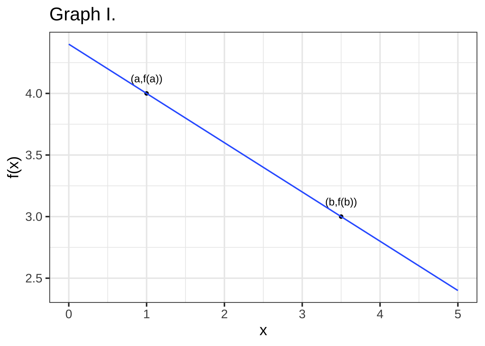

<!DOCTYPE html>
<html lang="" xml:lang="">
<head>

  <meta charset="utf-8" />
  <meta http-equiv="X-UA-Compatible" content="IE=edge" />
  <title>Chapter 9 Slope function | MOSAIC Calculus</title>
  <meta name="description" content="Modeling-based calculus" />
  <meta name="generator" content="bookdown 0.24.1 and GitBook 2.6.7" />

  <meta property="og:title" content="Chapter 9 Slope function | MOSAIC Calculus" />
  <meta property="og:type" content="book" />
  
  
  <meta property="og:description" content="Modeling-based calculus" />
  

  <meta name="twitter:card" content="summary" />
  <meta name="twitter:title" content="Chapter 9 Slope function | MOSAIC Calculus" />
  
  <meta name="twitter:description" content="Modeling-based calculus" />
  

<meta name="author" content="Daniel Kaplan" />


<meta name="date" content="2021-10-15" />

  <meta name="viewport" content="width=device-width, initial-scale=1" />
  <meta name="apple-mobile-web-app-capable" content="yes" />
  <meta name="apple-mobile-web-app-status-bar-style" content="black" />
  
  
<link rel="prev" href="process-of-modeling.html"/>
<link rel="next" href="function-inverses-and-solving.html"/>
<script src="libs/header-attrs-2.11/header-attrs.js"></script>
<script src="libs/jquery-3.6.0/jquery-3.6.0.min.js"></script>
<script src="https://cdn.jsdelivr.net/npm/fuse.js@6.4.6/dist/fuse.min.js"></script>
<link href="libs/gitbook-2.6.7/css/style.css" rel="stylesheet" />
<link href="libs/gitbook-2.6.7/css/plugin-table.css" rel="stylesheet" />
<link href="libs/gitbook-2.6.7/css/plugin-bookdown.css" rel="stylesheet" />
<link href="libs/gitbook-2.6.7/css/plugin-highlight.css" rel="stylesheet" />
<link href="libs/gitbook-2.6.7/css/plugin-search.css" rel="stylesheet" />
<link href="libs/gitbook-2.6.7/css/plugin-fontsettings.css" rel="stylesheet" />
<link href="libs/gitbook-2.6.7/css/plugin-clipboard.css" rel="stylesheet" />


<link href="libs/anchor-sections-1.0.1/anchor-sections.css" rel="stylesheet" />
<script src="libs/anchor-sections-1.0.1/anchor-sections.js"></script>
<script src="libs/kePrint-0.0.1/kePrint.js"></script>
<link href="libs/lightable-0.0.1/lightable.css" rel="stylesheet" />
<script src="libs/htmlwidgets-1.5.4/htmlwidgets.js"></script>
<script src="libs/plotly-binding-4.10.0/plotly.js"></script>
<script src="libs/typedarray-0.1/typedarray.min.js"></script>
<link href="libs/crosstalk-1.1.1/css/crosstalk.css" rel="stylesheet" />
<script src="libs/crosstalk-1.1.1/js/crosstalk.min.js"></script>
<link href="libs/plotly-htmlwidgets-css-2.5.1/plotly-htmlwidgets.css" rel="stylesheet" />
<script src="libs/plotly-main-2.5.1/plotly-latest.min.js"></script>
<link href="libs/datatables-css-0.0.0/datatables-crosstalk.css" rel="stylesheet" />
<script src="libs/datatables-binding-0.18/datatables.js"></script>
<link href="libs/dt-core-1.10.20/css/jquery.dataTables.min.css" rel="stylesheet" />
<link href="libs/dt-core-1.10.20/css/jquery.dataTables.extra.css" rel="stylesheet" />
<script src="libs/dt-core-1.10.20/js/jquery.dataTables.min.js"></script>
<span class="math inline">
\(\newcommand{\line}{\text{line}}
\newcommand{\hump}{\text{hump}}
\newcommand{\sigmoid}{\text{sigmoid}}
\newcommand{\recip}{\text{recip}}
\newcommand{\diff}[1]{{\cal D}_#1}
\newcommand{\pnorm}{\text{pnorm}}
\newcommand{\dnorm}{\text{dnorm}}
\newcommand{\CC}[1]{\color{#648fff}{#1}}
\newcommand{\CE}[1]{\color{#785ef0}{#1}}
\newcommand{\CA}[1]{\color{#dc267f}{#1}}
\newcommand{\CB}[1]{\color{#fe6100}{#1}}
\newcommand{\CD}[1]{\color{#ffb000}{#1}}\)
</span>


<style type="text/css">
pre > code.sourceCode { white-space: pre; position: relative; }
pre > code.sourceCode > span { display: inline-block; line-height: 1.25; }
pre > code.sourceCode > span:empty { height: 1.2em; }
.sourceCode { overflow: visible; }
code.sourceCode > span { color: inherit; text-decoration: inherit; }
pre.sourceCode { margin: 0; }
@media screen {
div.sourceCode { overflow: auto; }
}
@media print {
pre > code.sourceCode { white-space: pre-wrap; }
pre > code.sourceCode > span { text-indent: -5em; padding-left: 5em; }
}
pre.numberSource code
  { counter-reset: source-line 0; }
pre.numberSource code > span
  { position: relative; left: -4em; counter-increment: source-line; }
pre.numberSource code > span > a:first-child::before
  { content: counter(source-line);
    position: relative; left: -1em; text-align: right; vertical-align: baseline;
    border: none; display: inline-block;
    -webkit-touch-callout: none; -webkit-user-select: none;
    -khtml-user-select: none; -moz-user-select: none;
    -ms-user-select: none; user-select: none;
    padding: 0 4px; width: 4em;
    color: #aaaaaa;
  }
pre.numberSource { margin-left: 3em; border-left: 1px solid #aaaaaa;  padding-left: 4px; }
div.sourceCode
  {   }
@media screen {
pre > code.sourceCode > span > a:first-child::before { text-decoration: underline; }
}
code span.al { color: #ff0000; font-weight: bold; } /* Alert */
code span.an { color: #60a0b0; font-weight: bold; font-style: italic; } /* Annotation */
code span.at { color: #7d9029; } /* Attribute */
code span.bn { color: #40a070; } /* BaseN */
code span.bu { } /* BuiltIn */
code span.cf { color: #007020; font-weight: bold; } /* ControlFlow */
code span.ch { color: #4070a0; } /* Char */
code span.cn { color: #880000; } /* Constant */
code span.co { color: #60a0b0; font-style: italic; } /* Comment */
code span.cv { color: #60a0b0; font-weight: bold; font-style: italic; } /* CommentVar */
code span.do { color: #ba2121; font-style: italic; } /* Documentation */
code span.dt { color: #902000; } /* DataType */
code span.dv { color: #40a070; } /* DecVal */
code span.er { color: #ff0000; font-weight: bold; } /* Error */
code span.ex { } /* Extension */
code span.fl { color: #40a070; } /* Float */
code span.fu { color: #06287e; } /* Function */
code span.im { } /* Import */
code span.in { color: #60a0b0; font-weight: bold; font-style: italic; } /* Information */
code span.kw { color: #007020; font-weight: bold; } /* Keyword */
code span.op { color: #666666; } /* Operator */
code span.ot { color: #007020; } /* Other */
code span.pp { color: #bc7a00; } /* Preprocessor */
code span.sc { color: #4070a0; } /* SpecialChar */
code span.ss { color: #bb6688; } /* SpecialString */
code span.st { color: #4070a0; } /* String */
code span.va { color: #19177c; } /* Variable */
code span.vs { color: #4070a0; } /* VerbatimString */
code span.wa { color: #60a0b0; font-weight: bold; font-style: italic; } /* Warning */
</style>


<link rel="stylesheet" href="CalcZ-style.css" type="text/css" />
</head>

<body>


  <div class="book without-animation with-summary font-size-2 font-family-1" data-basepath=".">

    <div class="book-summary">
      <nav role="navigation">

<ul class="summary">
<li><strong><a href="./">CalcZ</a></strong></li>

<li class="divider"></li>
<li class="chapter" data-level="" data-path="welcome-to-calculus.html"><a href="welcome-to-calculus.html"><i class="fa fa-check"></i>Welcome to calculus</a>
<ul>
<li class="chapter" data-level="" data-path="welcome-to-calculus.html"><a href="welcome-to-calculus.html#computing-and-apps"><i class="fa fa-check"></i>Computing and apps</a></li>
<li class="chapter" data-level="" data-path="welcome-to-calculus.html"><a href="welcome-to-calculus.html#exercises-and-feedback"><i class="fa fa-check"></i>Exercises and feedback</a></li>
<li class="chapter" data-level="" data-path="welcome-to-calculus.html"><a href="welcome-to-calculus.html#practice-practice-practice"><i class="fa fa-check"></i>Practice, practice, practice</a></li>
<li class="chapter" data-level="" data-path="welcome-to-calculus.html"><a href="welcome-to-calculus.html#software-for-the-course"><i class="fa fa-check"></i>Software for the course</a></li>
</ul></li>
<li class="part"><span><b>I Block 1: Functions and quantity</b></span></li>
<li class="chapter" data-level="1" data-path="change.html"><a href="change.html"><i class="fa fa-check"></i><b>1</b> Change</a>
<ul>
<li class="chapter" data-level="1.1" data-path="change.html"><a href="change.html#quantity-vs-number"><i class="fa fa-check"></i><b>1.1</b> Quantity vs number</a></li>
<li class="chapter" data-level="1.2" data-path="change.html"><a href="change.html#functions"><i class="fa fa-check"></i><b>1.2</b> Functions</a></li>
<li class="chapter" data-level="1.3" data-path="change.html"><a href="change.html#fundamental-model-of-change"><i class="fa fa-check"></i><b>1.3</b> Fundamental model of change</a></li>
<li class="chapter" data-level="1.4" data-path="change.html"><a href="change.html#exercises"><i class="fa fa-check"></i><b>1.4</b> Exercises</a></li>
</ul></li>
<li class="chapter" data-level="2" data-path="pattern-book.html"><a href="pattern-book.html"><i class="fa fa-check"></i><b>2</b> Functions for modeling</a>
<ul>
<li class="chapter" data-level="2.1" data-path="pattern-book.html"><a href="pattern-book.html#pattern-book-functions"><i class="fa fa-check"></i><b>2.1</b> Pattern-book functions</a></li>
<li class="chapter" data-level="2.2" data-path="pattern-book.html"><a href="pattern-book.html#the-power-law-family"><i class="fa fa-check"></i><b>2.2</b> The power-law family</a></li>
<li class="chapter" data-level="2.3" data-path="pattern-book.html"><a href="pattern-book.html#constructing-functions"><i class="fa fa-check"></i><b>2.3</b> Constructing functions</a></li>
<li class="chapter" data-level="2.4" data-path="pattern-book.html"><a href="pattern-book.html#function-shapes"><i class="fa fa-check"></i><b>2.4</b> Function shapes</a></li>
<li class="chapter" data-level="2.5" data-path="pattern-book.html"><a href="pattern-book.html#exercises-1"><i class="fa fa-check"></i><b>2.5</b> Exercises</a></li>
</ul></li>
<li class="chapter" data-level="3" data-path="structure-of-a-function.html"><a href="structure-of-a-function.html"><i class="fa fa-check"></i><b>3</b> Structure of a function</a>
<ul>
<li class="chapter" data-level="3.1" data-path="structure-of-a-function.html"><a href="structure-of-a-function.html#inputs-to-output"><i class="fa fa-check"></i><b>3.1</b> Inputs to output</a></li>
<li class="chapter" data-level="3.2" data-path="structure-of-a-function.html"><a href="structure-of-a-function.html#bureaucratic"><i class="fa fa-check"></i><b>3.2</b> A bureaucratic analogy</a></li>
<li class="chapter" data-level="3.3" data-path="structure-of-a-function.html"><a href="structure-of-a-function.html#domain-input-space"><i class="fa fa-check"></i><b>3.3</b> Domain: input space</a></li>
<li class="chapter" data-level="3.4" data-path="structure-of-a-function.html"><a href="structure-of-a-function.html#range-output-space"><i class="fa fa-check"></i><b>3.4</b> Range: output space</a></li>
<li class="chapter" data-level="3.5" data-path="structure-of-a-function.html"><a href="structure-of-a-function.html#formulas-in-r"><i class="fa fa-check"></i><b>3.5</b> Formulas in R</a></li>
<li class="chapter" data-level="3.6" data-path="structure-of-a-function.html"><a href="structure-of-a-function.html#exercises-2"><i class="fa fa-check"></i><b>3.6</b> Exercises</a></li>
</ul></li>
<li class="chapter" data-level="4" data-path="fun-describing.html"><a href="fun-describing.html"><i class="fa fa-check"></i><b>4</b> Describing functions</a>
<ul>
<li class="chapter" data-level="4.1" data-path="fun-describing.html"><a href="fun-describing.html#slice-plot-intro"><i class="fa fa-check"></i><b>4.1</b> Graphing a function</a></li>
<li class="chapter" data-level="4.2" data-path="fun-describing.html"><a href="fun-describing.html#tables-of-inputs-and-outputs"><i class="fa fa-check"></i><b>4.2</b> Tables of inputs and outputs</a></li>
<li class="chapter" data-level="4.3" data-path="fun-describing.html"><a href="fun-describing.html#word-descriptions"><i class="fa fa-check"></i><b>4.3</b> Word descriptions</a>
<ul>
<li class="chapter" data-level="4.3.1" data-path="fun-describing.html"><a href="fun-describing.html#concavity"><i class="fa fa-check"></i><b>4.3.1</b> Concavity</a></li>
<li class="chapter" data-level="4.3.2" data-path="fun-describing.html"><a href="fun-describing.html#continuity-intro"><i class="fa fa-check"></i><b>4.3.2</b> Continuity</a></li>
<li class="chapter" data-level="4.3.3" data-path="fun-describing.html"><a href="fun-describing.html#monotonicity"><i class="fa fa-check"></i><b>4.3.3</b> Monotonicity</a></li>
<li class="chapter" data-level="4.3.4" data-path="fun-describing.html"><a href="fun-describing.html#periodicity"><i class="fa fa-check"></i><b>4.3.4</b> Periodicity</a></li>
<li class="chapter" data-level="4.3.5" data-path="fun-describing.html"><a href="fun-describing.html#asymptotic-behavior"><i class="fa fa-check"></i><b>4.3.5</b> Asymptotic behavior</a></li>
<li class="chapter" data-level="4.3.6" data-path="fun-describing.html"><a href="fun-describing.html#local-extremes"><i class="fa fa-check"></i><b>4.3.6</b> Locally extreme points</a></li>
</ul></li>
<li class="chapter" data-level="4.4" data-path="fun-describing.html"><a href="fun-describing.html#computer-function-names"><i class="fa fa-check"></i><b>4.4</b> Computer function names</a></li>
<li class="chapter" data-level="4.5" data-path="fun-describing.html"><a href="fun-describing.html#mathematical-notation"><i class="fa fa-check"></i><b>4.5</b> Mathematical notation</a></li>
<li class="chapter" data-level="4.6" data-path="fun-describing.html"><a href="fun-describing.html#exercises-3"><i class="fa fa-check"></i><b>4.6</b> Exercises</a></li>
</ul></li>
<li class="chapter" data-level="5" data-path="fun-notation.html"><a href="fun-notation.html"><i class="fa fa-check"></i><b>5</b> Notation for functions</a>
<ul>
<li class="chapter" data-level="5.1" data-path="fun-notation.html"><a href="fun-notation.html#a-notation-for-computing"><i class="fa fa-check"></i><b>5.1</b> A notation for computing</a></li>
<li class="chapter" data-level="5.2" data-path="fun-notation.html"><a href="fun-notation.html#words-for-using-functions"><i class="fa fa-check"></i><b>5.2</b> Words for using functions</a></li>
<li class="chapter" data-level="5.3" data-path="fun-notation.html"><a href="fun-notation.html#algorithms"><i class="fa fa-check"></i><b>5.3</b> Formulas and algorithms</a></li>
<li class="chapter" data-level="5.4" data-path="fun-notation.html"><a href="fun-notation.html#algorithms-without-formulas"><i class="fa fa-check"></i><b>5.4</b> Algorithms without formulas</a></li>
<li class="chapter" data-level="5.5" data-path="fun-notation.html"><a href="fun-notation.html#computer-notation"><i class="fa fa-check"></i><b>5.5</b> Computer notation</a></li>
<li class="chapter" data-level="5.6" data-path="fun-notation.html"><a href="fun-notation.html#calcz-naming-conventions"><i class="fa fa-check"></i><b>5.6</b> CalcZ naming conventions</a></li>
<li class="chapter" data-level="5.7" data-path="fun-notation.html"><a href="fun-notation.html#functions-in-r"><i class="fa fa-check"></i><b>5.7</b> Functions in R</a></li>
<li class="chapter" data-level="5.8" data-path="fun-notation.html"><a href="fun-notation.html#foursigns"><i class="fa fa-check"></i><b>5.8</b> <span class="math inline">\(=\)</span>, <span class="math inline">\(\equiv\)</span>, <span class="math inline">\(\rightarrow\)</span>, <code>&lt;-</code></a></li>
<li class="chapter" data-level="5.9" data-path="fun-notation.html"><a href="fun-notation.html#exercises-4"><i class="fa fa-check"></i><b>5.9</b> Exercises</a></li>
</ul></li>
<li class="chapter" data-level="6" data-path="graphs-and-graphics.html"><a href="graphs-and-graphics.html"><i class="fa fa-check"></i><b>6</b> Graphics &amp; function graphs</a>
<ul>
<li class="chapter" data-level="6.1" data-path="graphs-and-graphics.html"><a href="graphs-and-graphics.html#the-graphics-frame"><i class="fa fa-check"></i><b>6.1</b> The graphics frame</a></li>
<li class="chapter" data-level="6.2" data-path="graphs-and-graphics.html"><a href="graphs-and-graphics.html#data-graphics-the-point-plot"><i class="fa fa-check"></i><b>6.2</b> Data graphics: the point plot</a></li>
<li class="chapter" data-level="6.3" data-path="graphs-and-graphics.html"><a href="graphs-and-graphics.html#function-graphs"><i class="fa fa-check"></i><b>6.3</b> Function graphs</a></li>
<li class="chapter" data-level="6.4" data-path="graphs-and-graphics.html"><a href="graphs-and-graphics.html#graphics-layers"><i class="fa fa-check"></i><b>6.4</b> Graphics layers</a></li>
<li class="chapter" data-level="6.5" data-path="graphs-and-graphics.html"><a href="graphs-and-graphics.html#data-and-functions"><i class="fa fa-check"></i><b>6.5</b> Data and functions</a></li>
<li class="chapter" data-level="6.6" data-path="graphs-and-graphics.html"><a href="graphs-and-graphics.html#inputs-to-output-1"><i class="fa fa-check"></i><b>6.6</b> Inputs to output</a></li>
<li class="chapter" data-level="6.7" data-path="graphs-and-graphics.html"><a href="graphs-and-graphics.html#outputs-to-inputs"><i class="fa fa-check"></i><b>6.7</b> Outputs to inputs</a></li>
<li class="chapter" data-level="6.8" data-path="graphs-and-graphics.html"><a href="graphs-and-graphics.html#surface-plot"><i class="fa fa-check"></i><b>6.8</b> Graphs of functions with two inputs</a></li>
<li class="chapter" data-level="6.9" data-path="graphs-and-graphics.html"><a href="graphs-and-graphics.html#contour-plots"><i class="fa fa-check"></i><b>6.9</b> Contour plots</a></li>
<li class="chapter" data-level="6.10" data-path="graphs-and-graphics.html"><a href="graphs-and-graphics.html#slice-plots"><i class="fa fa-check"></i><b>6.10</b> Slice plots</a></li>
<li class="chapter" data-level="6.11" data-path="graphs-and-graphics.html"><a href="graphs-and-graphics.html#exercises-5"><i class="fa fa-check"></i><b>6.11</b> Exercises</a></li>
</ul></li>
<li class="chapter" data-level="7" data-path="params-intro.html"><a href="params-intro.html"><i class="fa fa-check"></i><b>7</b> Parameters for functions</a>
<ul>
<li class="chapter" data-level="7.1" data-path="params-intro.html"><a href="params-intro.html#parallel-scales"><i class="fa fa-check"></i><b>7.1</b> Parallel scales</a></li>
<li class="chapter" data-level="7.2" data-path="params-intro.html"><a href="params-intro.html#scaling-the-input"><i class="fa fa-check"></i><b>7.2</b> Scaling the input</a></li>
<li class="chapter" data-level="7.3" data-path="params-intro.html"><a href="params-intro.html#scale-the-output"><i class="fa fa-check"></i><b>7.3</b> Scale the output</a></li>
<li class="chapter" data-level="7.4" data-path="params-intro.html"><a href="params-intro.html#linear-combinations"><i class="fa fa-check"></i><b>7.4</b> Linear combinations</a></li>
<li class="chapter" data-level="7.5" data-path="params-intro.html"><a href="params-intro.html#exercises-6"><i class="fa fa-check"></i><b>7.5</b> Exercises</a></li>
</ul></li>
<li class="chapter" data-level="8" data-path="process-of-modeling.html"><a href="process-of-modeling.html"><i class="fa fa-check"></i><b>8</b> Finding parameters for the basic modeling functions</a>
<ul>
<li class="chapter" data-level="8.1" data-path="process-of-modeling.html"><a href="process-of-modeling.html#variations-from-scaling"><i class="fa fa-check"></i><b>8.1</b> Variations from scaling</a></li>
<li class="chapter" data-level="8.2" data-path="process-of-modeling.html"><a href="process-of-modeling.html#fit-periodic"><i class="fa fa-check"></i><b>8.2</b> Curve fitting a periodic function</a></li>
<li class="chapter" data-level="8.3" data-path="process-of-modeling.html"><a href="process-of-modeling.html#fit-exponential"><i class="fa fa-check"></i><b>8.3</b> Curve fitting an exponential function</a></li>
<li class="chapter" data-level="8.4" data-path="process-of-modeling.html"><a href="process-of-modeling.html#curve-fitting-a-power-law-function"><i class="fa fa-check"></i><b>8.4</b> Curve fitting a power-law function</a></li>
<li class="chapter" data-level="8.5" data-path="process-of-modeling.html"><a href="process-of-modeling.html#gaussian-and-sigmoid-functions"><i class="fa fa-check"></i><b>8.5</b> Gaussian and sigmoid functions</a></li>
<li class="chapter" data-level="8.6" data-path="process-of-modeling.html"><a href="process-of-modeling.html#exercises-7"><i class="fa fa-check"></i><b>8.6</b> Exercises</a></li>
</ul></li>
<li class="chapter" data-level="9" data-path="fun-slopes.html"><a href="fun-slopes.html"><i class="fa fa-check"></i><b>9</b> Slope function</a>
<ul>
<li class="chapter" data-level="9.1" data-path="fun-slopes.html"><a href="fun-slopes.html#change-and-slope"><i class="fa fa-check"></i><b>9.1</b> Change and slope</a></li>
<li class="chapter" data-level="9.2" data-path="fun-slopes.html"><a href="fun-slopes.html#continuous-change"><i class="fa fa-check"></i><b>9.2</b> Continuous change</a></li>
<li class="chapter" data-level="9.3" data-path="fun-slopes.html"><a href="fun-slopes.html#slope"><i class="fa fa-check"></i><b>9.3</b> Slope</a></li>
<li class="chapter" data-level="9.4" data-path="fun-slopes.html"><a href="fun-slopes.html#the-fitted-line"><i class="fa fa-check"></i><b>9.4</b> The fitted line</a></li>
<li class="chapter" data-level="9.5" data-path="fun-slopes.html"><a href="fun-slopes.html#average-rate-of-change"><i class="fa fa-check"></i><b>9.5</b> Average rate of change</a></li>
<li class="chapter" data-level="9.6" data-path="fun-slopes.html"><a href="fun-slopes.html#instantaneous-rate-of-change"><i class="fa fa-check"></i><b>9.6</b> Instantaneous rate of change</a></li>
<li class="chapter" data-level="9.7" data-path="fun-slopes.html"><a href="fun-slopes.html#exercises-8"><i class="fa fa-check"></i><b>9.7</b> Exercises</a></li>
</ul></li>
<li class="chapter" data-level="10" data-path="function-inverses-and-solving.html"><a href="function-inverses-and-solving.html"><i class="fa fa-check"></i><b>10</b> Function inverses and “solving”</a>
<ul>
<li class="chapter" data-level="10.1" data-path="function-inverses-and-solving.html"><a href="function-inverses-and-solving.html#function-inverses"><i class="fa fa-check"></i><b>10.1</b> Function inverses</a></li>
<li class="chapter" data-level="10.2" data-path="function-inverses-and-solving.html"><a href="function-inverses-and-solving.html#solving-graphically"><i class="fa fa-check"></i><b>10.2</b> Solving graphically</a></li>
<li class="chapter" data-level="10.3" data-path="function-inverses-and-solving.html"><a href="function-inverses-and-solving.html#zero-finding"><i class="fa fa-check"></i><b>10.3</b> Zero-finding</a></li>
<li class="chapter" data-level="10.4" data-path="function-inverses-and-solving.html"><a href="function-inverses-and-solving.html#exercises-9"><i class="fa fa-check"></i><b>10.4</b> Exercises</a></li>
</ul></li>
<li class="chapter" data-level="11" data-path="fun-assembling.html"><a href="fun-assembling.html"><i class="fa fa-check"></i><b>11</b> Assembling functions</a>
<ul>
<li class="chapter" data-level="11.1" data-path="fun-assembling.html"><a href="fun-assembling.html#linear-combination"><i class="fa fa-check"></i><b>11.1</b> Linear combination</a></li>
<li class="chapter" data-level="11.2" data-path="fun-assembling.html"><a href="fun-assembling.html#function-composition"><i class="fa fa-check"></i><b>11.2</b> Function composition</a></li>
<li class="chapter" data-level="11.3" data-path="fun-assembling.html"><a href="fun-assembling.html#modeling-polynomial-1"><i class="fa fa-check"></i><b>11.3</b> The modeling polynomial</a></li>
<li class="chapter" data-level="11.4" data-path="fun-assembling.html"><a href="fun-assembling.html#function-multiplication"><i class="fa fa-check"></i><b>11.4</b> Function multiplication</a></li>
<li class="chapter" data-level="11.5" data-path="fun-assembling.html"><a href="fun-assembling.html#all-together-now"><i class="fa fa-check"></i><b>11.5</b> All together now!</a></li>
<li class="chapter" data-level="11.6" data-path="fun-assembling.html"><a href="fun-assembling.html#exercises-10"><i class="fa fa-check"></i><b>11.6</b> Exercises</a></li>
</ul></li>
<li class="chapter" data-level="12" data-path="fun-multiple-inputs.html"><a href="fun-multiple-inputs.html"><i class="fa fa-check"></i><b>12</b> Functions with multiple inputs</a>
<ul>
<li class="chapter" data-level="12.1" data-path="fun-multiple-inputs.html"><a href="fun-multiple-inputs.html#fx-times-gt"><i class="fa fa-check"></i><b>12.1</b> f(x) times g(t)</a></li>
<li class="chapter" data-level="12.2" data-path="fun-multiple-inputs.html"><a href="fun-multiple-inputs.html#two-variable-modeling-polynomial"><i class="fa fa-check"></i><b>12.2</b> Two-variable modeling polynomial</a></li>
<li class="chapter" data-level="12.3" data-path="fun-multiple-inputs.html"><a href="fun-multiple-inputs.html#exercises-11"><i class="fa fa-check"></i><b>12.3</b> Exercises</a></li>
</ul></li>
<li class="chapter" data-level="13" data-path="fun-piecewise.html"><a href="fun-piecewise.html"><i class="fa fa-check"></i><b>13</b> Piecewise functions</a>
<ul>
<li class="chapter" data-level="13.1" data-path="fun-piecewise.html"><a href="fun-piecewise.html#splitting-the-domain"><i class="fa fa-check"></i><b>13.1</b> Splitting the domain</a></li>
<li class="chapter" data-level="13.2" data-path="fun-piecewise.html"><a href="fun-piecewise.html#basic-piecewise-functions"><i class="fa fa-check"></i><b>13.2</b> Basic piecewise functions</a></li>
<li class="chapter" data-level="13.3" data-path="fun-piecewise.html"><a href="fun-piecewise.html#exercises-12"><i class="fa fa-check"></i><b>13.3</b> Exercises</a></li>
</ul></li>
<li class="chapter" data-level="14" data-path="modeling-cycle.html"><a href="modeling-cycle.html"><i class="fa fa-check"></i><b>14</b> Modeling cycle</a>
<ul>
<li class="chapter" data-level="14.1" data-path="modeling-cycle.html"><a href="modeling-cycle.html#example-cooling-water"><i class="fa fa-check"></i><b>14.1</b> Example: Cooling water</a></li>
<li class="chapter" data-level="14.2" data-path="modeling-cycle.html"><a href="modeling-cycle.html#example-the-tides"><i class="fa fa-check"></i><b>14.2</b> Example: The tides</a></li>
<li class="chapter" data-level="14.3" data-path="modeling-cycle.html"><a href="modeling-cycle.html#modeling-project"><i class="fa fa-check"></i><b>14.3</b> Modeling project</a></li>
</ul></li>
<li class="chapter" data-level="15" data-path="magnitudes.html"><a href="magnitudes.html"><i class="fa fa-check"></i><b>15</b> Magnitudes</a>
<ul>
<li class="chapter" data-level="15.1" data-path="magnitudes.html"><a href="magnitudes.html#counting-digits"><i class="fa fa-check"></i><b>15.1</b> Counting digits</a></li>
<li class="chapter" data-level="15.2" data-path="magnitudes.html"><a href="magnitudes.html#using-digit-to-understand-magnitude"><i class="fa fa-check"></i><b>15.2</b> Using digit() to understand magnitude</a></li>
<li class="chapter" data-level="15.3" data-path="magnitudes.html"><a href="magnitudes.html#quantity-and-magnitude"><i class="fa fa-check"></i><b>15.3</b> Quantity and magnitude</a></li>
<li class="chapter" data-level="15.4" data-path="magnitudes.html"><a href="magnitudes.html#composing-ln"><i class="fa fa-check"></i><b>15.4</b> Composing <span class="math inline">\(\ln()\)</span></a></li>
<li class="chapter" data-level="15.5" data-path="magnitudes.html"><a href="magnitudes.html#magnitude-graphics"><i class="fa fa-check"></i><b>15.5</b> Magnitude graphics</a></li>
<li class="chapter" data-level="15.6" data-path="magnitudes.html"><a href="magnitudes.html#reading-log-axes"><i class="fa fa-check"></i><b>15.6</b> Reading logarithmic scales</a></li>
<li class="chapter" data-level="15.7" data-path="magnitudes.html"><a href="magnitudes.html#fractional-digits"><i class="fa fa-check"></i><b>15.7</b> Fractional digits (optional)</a></li>
<li class="chapter" data-level="15.8" data-path="magnitudes.html"><a href="magnitudes.html#exercises-13"><i class="fa fa-check"></i><b>15.8</b> Exercises</a></li>
</ul></li>
<li class="chapter" data-level="16" data-path="dimensions.html"><a href="dimensions.html"><i class="fa fa-check"></i><b>16</b> Dimensions</a>
<ul>
<li class="chapter" data-level="16.1" data-path="dimensions.html"><a href="dimensions.html#mathematics-of-quantity"><i class="fa fa-check"></i><b>16.1</b> Mathematics of quantity</a></li>
<li class="chapter" data-level="16.2" data-path="dimensions.html"><a href="dimensions.html#compound-dimensions"><i class="fa fa-check"></i><b>16.2</b> Compound dimensions</a></li>
<li class="chapter" data-level="16.3" data-path="dimensions.html"><a href="dimensions.html#arithmetic-with-dimensions"><i class="fa fa-check"></i><b>16.3</b> Arithmetic with dimensions</a></li>
<li class="chapter" data-level="16.4" data-path="dimensions.html"><a href="dimensions.html#pendulum-dimensions"><i class="fa fa-check"></i><b>16.4</b> Example: Dimensional analysis</a></li>
<li class="chapter" data-level="16.5" data-path="dimensions.html"><a href="dimensions.html#conversion-flavors-of-1"><i class="fa fa-check"></i><b>16.5</b> Conversion: Flavors of 1</a></li>
<li class="chapter" data-level="16.6" data-path="dimensions.html"><a href="dimensions.html#dimensions-and-linear-combinations"><i class="fa fa-check"></i><b>16.6</b> Dimensions and linear combinations</a></li>
<li class="chapter" data-level="16.7" data-path="dimensions.html"><a href="dimensions.html#exercises-14"><i class="fa fa-check"></i><b>16.7</b> Exercises</a></li>
</ul></li>
<li class="chapter" data-level="" data-path="projects-and-review.html"><a href="projects-and-review.html"><i class="fa fa-check"></i>Projects and review</a>
<ul>
<li class="chapter" data-level="16.8" data-path="projects-and-review.html"><a href="projects-and-review.html#ebola-in-guinea-part-i"><i class="fa fa-check"></i><b>16.8</b> Ebola in Guinea, part I</a>
<ul>
<li class="chapter" data-level="16.8.1" data-path="projects-and-review.html"><a href="projects-and-review.html#data"><i class="fa fa-check"></i><b>16.8.1</b> Data</a></li>
<li class="chapter" data-level="16.8.2" data-path="projects-and-review.html"><a href="projects-and-review.html#exploring-the-data"><i class="fa fa-check"></i><b>16.8.2</b> Exploring the Data</a></li>
<li class="chapter" data-level="16.8.3" data-path="projects-and-review.html"><a href="projects-and-review.html#data-wrangling"><i class="fa fa-check"></i><b>16.8.3</b> Data Wrangling</a></li>
</ul></li>
<li class="chapter" data-level="16.9" data-path="projects-and-review.html"><a href="projects-and-review.html#analysis-of-the-outbreak"><i class="fa fa-check"></i><b>16.9</b> Analysis of the outbreak</a></li>
<li class="chapter" data-level="16.10" data-path="projects-and-review.html"><a href="projects-and-review.html#more-data-smoothing"><i class="fa fa-check"></i><b>16.10</b> More data smoothing</a></li>
<li class="chapter" data-level="16.11" data-path="projects-and-review.html"><a href="projects-and-review.html#final-thoughts"><i class="fa fa-check"></i><b>16.11</b> Final thoughts</a></li>
</ul></li>
<li class="part"><span><b>II Block 2: Differentiation</b></span></li>
<li class="chapter" data-level="" data-path="prolog-differentiation-and-birth.html"><a href="prolog-differentiation-and-birth.html"><i class="fa fa-check"></i>Prolog: Differentiation and birth</a></li>
<li class="chapter" data-level="17" data-path="change-relationships.html"><a href="change-relationships.html"><i class="fa fa-check"></i><b>17</b> Change relationships</a>
<ul>
<li class="chapter" data-level="17.1" data-path="change-relationships.html"><a href="change-relationships.html#mathematics-in-motion"><i class="fa fa-check"></i><b>17.1</b> Mathematics in motion</a></li>
<li class="chapter" data-level="17.2" data-path="change-relationships.html"><a href="change-relationships.html#continuous-time"><i class="fa fa-check"></i><b>17.2</b> Continuous time</a></li>
<li class="chapter" data-level="17.3" data-path="change-relationships.html"><a href="change-relationships.html#instantaneous-rate-of-change-1"><i class="fa fa-check"></i><b>17.3</b> Instantaneous rate of change</a></li>
<li class="chapter" data-level="17.4" data-path="change-relationships.html"><a href="change-relationships.html#slopes-and-motion"><i class="fa fa-check"></i><b>17.4</b> Slopes and motion</a></li>
<li class="chapter" data-level="17.5" data-path="change-relationships.html"><a href="change-relationships.html#acceleration"><i class="fa fa-check"></i><b>17.5</b> Acceleration</a></li>
<li class="chapter" data-level="17.6" data-path="change-relationships.html"><a href="change-relationships.html#notations-for-differentiation"><i class="fa fa-check"></i><b>17.6</b> Notations for differentiation</a></li>
<li class="chapter" data-level="17.7" data-path="change-relationships.html"><a href="change-relationships.html#slope-fun-visualization"><i class="fa fa-check"></i><b>17.7</b> Visualizing the slope function</a></li>
<li class="chapter" data-level="17.8" data-path="change-relationships.html"><a href="change-relationships.html#dimension-of-derivatives"><i class="fa fa-check"></i><b>17.8</b> Dimension of derivatives</a></li>
<li class="chapter" data-level="17.9" data-path="change-relationships.html"><a href="change-relationships.html#exercises-15"><i class="fa fa-check"></i><b>17.9</b> Exercises</a></li>
</ul></li>
<li class="chapter" data-level="18" data-path="evanescent-h.html"><a href="evanescent-h.html"><i class="fa fa-check"></i><b>18</b> Evanescent h</a></li>
<li class="chapter" data-level="19" data-path="computing-derivs.html"><a href="computing-derivs.html"><i class="fa fa-check"></i><b>19</b> Computing derivatives</a>
<ul>
<li class="chapter" data-level="19.1" data-path="computing-derivs.html"><a href="computing-derivs.html#a-function-from-a-function"><i class="fa fa-check"></i><b>19.1</b> A function from a function</a></li>
<li class="chapter" data-level="19.2" data-path="computing-derivs.html"><a href="computing-derivs.html#finite-differencing"><i class="fa fa-check"></i><b>19.2</b> Finite differencing</a></li>
<li class="chapter" data-level="19.3" data-path="computing-derivs.html"><a href="computing-derivs.html#the-slope-function-operator"><i class="fa fa-check"></i><b>19.3</b> The slope-function operator</a></li>
<li class="chapter" data-level="19.4" data-path="computing-derivs.html"><a href="computing-derivs.html#symbolic-differentiation"><i class="fa fa-check"></i><b>19.4</b> Symbolic differentiation</a>
<ul>
<li class="chapter" data-level="19.4.1" data-path="computing-derivs.html"><a href="computing-derivs.html#the-line-rule"><i class="fa fa-check"></i><b>19.4.1</b> The line rule</a></li>
<li class="chapter" data-level="19.4.2" data-path="computing-derivs.html"><a href="computing-derivs.html#the-square-rule"><i class="fa fa-check"></i><b>19.4.2</b> The square rule</a></li>
<li class="chapter" data-level="19.4.3" data-path="computing-derivs.html"><a href="computing-derivs.html#the-exponential-rule"><i class="fa fa-check"></i><b>19.4.3</b> The exponential rule</a></li>
<li class="chapter" data-level="19.4.4" data-path="computing-derivs.html"><a href="computing-derivs.html#the-reciprocal-rule"><i class="fa fa-check"></i><b>19.4.4</b> The reciprocal rule</a></li>
<li class="chapter" data-level="19.4.5" data-path="computing-derivs.html"><a href="computing-derivs.html#power-law-rule"><i class="fa fa-check"></i><b>19.4.5</b> Power-law rule</a></li>
<li class="chapter" data-level="19.4.6" data-path="computing-derivs.html"><a href="computing-derivs.html#pattern-book-derivs"><i class="fa fa-check"></i><b>19.4.6</b> List of pattern-book rules</a></li>
</ul></li>
<li class="chapter" data-level="19.5" data-path="computing-derivs.html"><a href="computing-derivs.html#exercises-16"><i class="fa fa-check"></i><b>19.5</b> Exercises</a></li>
</ul></li>
<li class="chapter" data-level="20" data-path="concavity-curvature.html"><a href="concavity-curvature.html"><i class="fa fa-check"></i><b>20</b> Concavity and curvature</a>
<ul>
<li class="chapter" data-level="20.1" data-path="concavity-curvature.html"><a href="concavity-curvature.html#quantifing-concavity-and-curvature"><i class="fa fa-check"></i><b>20.1</b> Quantifing concavity and curvature</a></li>
<li class="chapter" data-level="20.2" data-path="concavity-curvature.html"><a href="concavity-curvature.html#concavity-deriv"><i class="fa fa-check"></i><b>20.2</b> Concavity</a></li>
<li class="chapter" data-level="20.3" data-path="concavity-curvature.html"><a href="concavity-curvature.html#curvature-definition"><i class="fa fa-check"></i><b>20.3</b> Curvature</a></li>
<li class="chapter" data-level="20.4" data-path="concavity-curvature.html"><a href="concavity-curvature.html#exercises-17"><i class="fa fa-check"></i><b>20.4</b> Exercises</a></li>
</ul></li>
<li class="chapter" data-level="21" data-path="cont-and-smooth.html"><a href="cont-and-smooth.html"><i class="fa fa-check"></i><b>21</b> Continuity and smoothness</a>
<ul>
<li class="chapter" data-level="21.1" data-path="cont-and-smooth.html"><a href="cont-and-smooth.html#continuity"><i class="fa fa-check"></i><b>21.1</b> Continuity</a></li>
<li class="chapter" data-level="21.2" data-path="cont-and-smooth.html"><a href="cont-and-smooth.html#discontinuity"><i class="fa fa-check"></i><b>21.2</b> Discontinuity</a></li>
<li class="chapter" data-level="21.3" data-path="cont-and-smooth.html"><a href="cont-and-smooth.html#smoothness"><i class="fa fa-check"></i><b>21.3</b> Smoothness</a></li>
<li class="chapter" data-level="21.4" data-path="cont-and-smooth.html"><a href="cont-and-smooth.html#exercises-18"><i class="fa fa-check"></i><b>21.4</b> Exercises</a></li>
</ul></li>
<li class="chapter" data-level="22" data-path="prod-comp-rules.html"><a href="prod-comp-rules.html"><i class="fa fa-check"></i><b>22</b> Derivatives of assembled functions</a>
<ul>
<li class="chapter" data-level="22.1" data-path="prod-comp-rules.html"><a href="prod-comp-rules.html#using-the-rules"><i class="fa fa-check"></i><b>22.1</b> Using the rules</a></li>
<li class="chapter" data-level="22.2" data-path="prod-comp-rules.html"><a href="prod-comp-rules.html#differentiating-linear-combinations"><i class="fa fa-check"></i><b>22.2</b> Differentiating linear combinations</a></li>
<li class="chapter" data-level="22.3" data-path="prod-comp-rules.html"><a href="prod-comp-rules.html#product-rule-for-multiplied-functions"><i class="fa fa-check"></i><b>22.3</b> Product rule for multiplied functions</a></li>
<li class="chapter" data-level="22.4" data-path="prod-comp-rules.html"><a href="prod-comp-rules.html#chain-rule-for-function-composition"><i class="fa fa-check"></i><b>22.4</b> Chain rule for function composition</a></li>
<li class="chapter" data-level="22.5" data-path="prod-comp-rules.html"><a href="prod-comp-rules.html#basic-derivs"><i class="fa fa-check"></i><b>22.5</b> Derivatives of the basic modeling functions</a></li>
<li class="chapter" data-level="22.6" data-path="prod-comp-rules.html"><a href="prod-comp-rules.html#exponentials-and-logarithms-optional"><i class="fa fa-check"></i><b>22.6</b> Exponentials and logarithms (optional)</a></li>
<li class="chapter" data-level="22.7" data-path="prod-comp-rules.html"><a href="prod-comp-rules.html#exercises-19"><i class="fa fa-check"></i><b>22.7</b> Exercises</a></li>
</ul></li>
<li class="chapter" data-level="23" data-path="optim-and-shape.html"><a href="optim-and-shape.html"><i class="fa fa-check"></i><b>23</b> Optimization</a>
<ul>
<li class="chapter" data-level="23.1" data-path="optim-and-shape.html"><a href="optim-and-shape.html#structure-of-the-problem"><i class="fa fa-check"></i><b>23.1</b> Structure of the problem</a></li>
<li class="chapter" data-level="23.2" data-path="optim-and-shape.html"><a href="optim-and-shape.html#interpreting-the-argmax"><i class="fa fa-check"></i><b>23.2</b> Interpreting the argmax</a></li>
<li class="chapter" data-level="23.3" data-path="optim-and-shape.html"><a href="optim-and-shape.html#derivatives-and-optimization"><i class="fa fa-check"></i><b>23.3</b> Derivatives and optimization</a></li>
<li class="chapter" data-level="23.4" data-path="optim-and-shape.html"><a href="optim-and-shape.html#flat-on-top"><i class="fa fa-check"></i><b>23.4</b> Be practical!</a></li>
<li class="chapter" data-level="23.5" data-path="optim-and-shape.html"><a href="optim-and-shape.html#exercises-20"><i class="fa fa-check"></i><b>23.5</b> Exercises</a></li>
</ul></li>
<li class="chapter" data-level="24" data-path="partial-change.html"><a href="partial-change.html"><i class="fa fa-check"></i><b>24</b> Partial change</a>
<ul>
<li class="chapter" data-level="24.1" data-path="partial-change.html"><a href="partial-change.html#calculus-on-two-inputs"><i class="fa fa-check"></i><b>24.1</b> Calculus on two inputs</a></li>
<li class="chapter" data-level="24.2" data-path="partial-change.html"><a href="partial-change.html#all-other-things-being-equal"><i class="fa fa-check"></i><b>24.2</b> All other things being equal …</a></li>
<li class="chapter" data-level="24.3" data-path="partial-change.html"><a href="partial-change.html#gradient-vector"><i class="fa fa-check"></i><b>24.3</b> Gradient vector</a></li>
<li class="chapter" data-level="24.4" data-path="partial-change.html"><a href="partial-change.html#total-derivative-optional"><i class="fa fa-check"></i><b>24.4</b> Total derivative (optional)</a></li>
<li class="chapter" data-level="24.5" data-path="partial-change.html"><a href="partial-change.html#differential-skier"><i class="fa fa-check"></i><b>24.5</b> Differentials</a></li>
<li class="chapter" data-level="24.6" data-path="partial-change.html"><a href="partial-change.html#exercises-21"><i class="fa fa-check"></i><b>24.6</b> Exercises</a></li>
</ul></li>
<li class="chapter" data-level="25" data-path="local-approximations.html"><a href="local-approximations.html"><i class="fa fa-check"></i><b>25</b> Local approximations</a>
<ul>
<li class="chapter" data-level="25.1" data-path="local-approximations.html"><a href="local-approximations.html#eight-simple-shapes"><i class="fa fa-check"></i><b>25.1</b> Eight simple shapes</a></li>
<li class="chapter" data-level="25.2" data-path="local-approximations.html"><a href="local-approximations.html#low-order-polynomials"><i class="fa fa-check"></i><b>25.2</b> Low-order polynomials</a></li>
<li class="chapter" data-level="25.3" data-path="local-approximations.html"><a href="local-approximations.html#low-order-two"><i class="fa fa-check"></i><b>25.3</b> The low-order polynomial with two inputs</a></li>
<li class="chapter" data-level="25.4" data-path="local-approximations.html"><a href="local-approximations.html#finding-coefficients-from-data"><i class="fa fa-check"></i><b>25.4</b> Finding coefficients from data</a></li>
<li class="chapter" data-level="25.5" data-path="local-approximations.html"><a href="local-approximations.html#exercises-22"><i class="fa fa-check"></i><b>25.5</b> Exercises</a></li>
</ul></li>
<li class="chapter" data-level="26" data-path="polynomials.html"><a href="polynomials.html"><i class="fa fa-check"></i><b>26</b> Polynomials</a>
<ul>
<li class="chapter" data-level="26.1" data-path="polynomials.html"><a href="polynomials.html#polynomial-basics"><i class="fa fa-check"></i><b>26.1</b> Basics of polynomials with one input</a></li>
<li class="chapter" data-level="26.2" data-path="polynomials.html"><a href="polynomials.html#multiple-inputs"><i class="fa fa-check"></i><b>26.2</b> Multiple inputs?</a></li>
<li class="chapter" data-level="26.3" data-path="polynomials.html"><a href="polynomials.html#high-order-approx"><i class="fa fa-check"></i><b>26.3</b> High-order approximations</a></li>
<li class="chapter" data-level="26.4" data-path="polynomials.html"><a href="polynomials.html#indeterminate-forms"><i class="fa fa-check"></i><b>26.4</b> Indeterminate forms</a></li>
<li class="chapter" data-level="26.5" data-path="polynomials.html"><a href="polynomials.html#computing-with-indeterminate-forms"><i class="fa fa-check"></i><b>26.5</b> Computing with indeterminate forms</a></li>
<li class="chapter" data-level="26.6" data-path="polynomials.html"><a href="polynomials.html#exercises-23"><i class="fa fa-check"></i><b>26.6</b> Exercises</a></li>
</ul></li>
<li class="part"><span><b>III Block 3: Accumulation</b></span></li>
<li class="chapter" data-level="27" data-path="change-accumulation.html"><a href="change-accumulation.html"><i class="fa fa-check"></i><b>27</b> Change and accumulation</a>
<ul>
<li class="chapter" data-level="27.1" data-path="change-accumulation.html"><a href="change-accumulation.html#accumulation"><i class="fa fa-check"></i><b>27.1</b> Accumulation</a></li>
<li class="chapter" data-level="27.2" data-path="change-accumulation.html"><a href="change-accumulation.html#notation-for-anti-differentiation"><i class="fa fa-check"></i><b>27.2</b> Notation for anti-differentiation</a></li>
<li class="chapter" data-level="27.3" data-path="change-accumulation.html"><a href="change-accumulation.html#rmosaic-notation"><i class="fa fa-check"></i><b>27.3</b> R/mosaic notation</a></li>
<li class="chapter" data-level="27.4" data-path="change-accumulation.html"><a href="change-accumulation.html#dimension-and-anti-differentiation"><i class="fa fa-check"></i><b>27.4</b> Dimension and anti-differentiation</a></li>
<li class="chapter" data-level="27.5" data-path="change-accumulation.html"><a href="change-accumulation.html#preliminary-terrors"><i class="fa fa-check"></i><b>27.5</b> From <em>Calculus Made Easy</em></a></li>
<li class="chapter" data-level="27.6" data-path="change-accumulation.html"><a href="change-accumulation.html#exercises-24"><i class="fa fa-check"></i><b>27.6</b> Exercises</a></li>
</ul></li>
<li class="chapter" data-level="28" data-path="totaling-bits.html"><a href="totaling-bits.html"><i class="fa fa-check"></i><b>28</b> Totaling the little bits</a>
<ul>
<li class="chapter" data-level="28.1" data-path="totaling-bits.html"><a href="totaling-bits.html#the-notation-of-little-bits"><i class="fa fa-check"></i><b>28.1</b> The notation of little bits</a></li>
<li class="chapter" data-level="28.2" data-path="totaling-bits.html"><a href="totaling-bits.html#exercises-25"><i class="fa fa-check"></i><b>28.2</b> Exercises</a></li>
</ul></li>
<li class="chapter" data-level="29" data-path="net-change.html"><a href="net-change.html"><i class="fa fa-check"></i><b>29</b> Integration</a>
<ul>
<li class="chapter" data-level="29.1" data-path="net-change.html"><a href="net-change.html#net-change-1"><i class="fa fa-check"></i><b>29.1</b> Net change</a></li>
<li class="chapter" data-level="29.2" data-path="net-change.html"><a href="net-change.html#the-definite-integral"><i class="fa fa-check"></i><b>29.2</b> The “definite” integral</a></li>
<li class="chapter" data-level="29.3" data-path="net-change.html"><a href="net-change.html#initial-value-of-the-quantity"><i class="fa fa-check"></i><b>29.3</b> Initial value of the quantity</a></li>
<li class="chapter" data-level="29.4" data-path="net-change.html"><a href="net-change.html#integrals-from-bottom-to-top"><i class="fa fa-check"></i><b>29.4</b> Integrals from bottom to top</a></li>
<li class="chapter" data-level="29.5" data-path="net-change.html"><a href="net-change.html#exercises-26"><i class="fa fa-check"></i><b>29.5</b> Exercises</a></li>
</ul></li>
<li class="chapter" data-level="30" data-path="integrals-step-by-step.html"><a href="integrals-step-by-step.html"><i class="fa fa-check"></i><b>30</b> Integrals step-by-step</a>
<ul>
<li class="chapter" data-level="30.1" data-path="integrals-step-by-step.html"><a href="integrals-step-by-step.html#euler-method"><i class="fa fa-check"></i><b>30.1</b> Euler method</a></li>
<li class="chapter" data-level="30.2" data-path="integrals-step-by-step.html"><a href="integrals-step-by-step.html#area"><i class="fa fa-check"></i><b>30.2</b> Area</a></li>
<li class="chapter" data-level="30.3" data-path="integrals-step-by-step.html"><a href="integrals-step-by-step.html#the-euler-step"><i class="fa fa-check"></i><b>30.3</b> The Euler Step</a></li>
<li class="chapter" data-level="30.4" data-path="integrals-step-by-step.html"><a href="integrals-step-by-step.html#better-numerics-optional"><i class="fa fa-check"></i><b>30.4</b> Better numerics (optional)</a></li>
<li class="chapter" data-level="30.5" data-path="integrals-step-by-step.html"><a href="integrals-step-by-step.html#exercises-27"><i class="fa fa-check"></i><b>30.5</b> Exercises</a></li>
</ul></li>
<li class="chapter" data-level="31" data-path="accum-symbolic.html"><a href="accum-symbolic.html"><i class="fa fa-check"></i><b>31</b> Symbolic anti-differentiation</a>
<ul>
<li class="chapter" data-level="31.1" data-path="accum-symbolic.html"><a href="accum-symbolic.html#cataloged-functions"><i class="fa fa-check"></i><b>31.1</b> The cataloged functions</a></li>
<li class="chapter" data-level="31.2" data-path="accum-symbolic.html"><a href="accum-symbolic.html#differentials"><i class="fa fa-check"></i><b>31.2</b> Differentials</a></li>
<li class="chapter" data-level="31.3" data-path="accum-symbolic.html"><a href="accum-symbolic.html#u-substitution"><i class="fa fa-check"></i><b>31.3</b> U-substitution</a></li>
<li class="chapter" data-level="31.4" data-path="accum-symbolic.html"><a href="accum-symbolic.html#integration-by-parts"><i class="fa fa-check"></i><b>31.4</b> Integration by parts</a></li>
<li class="chapter" data-level="31.5" data-path="accum-symbolic.html"><a href="accum-symbolic.html#integrating-polynomials"><i class="fa fa-check"></i><b>31.5</b> Integrating polynomials</a></li>
<li class="chapter" data-level="31.6" data-path="accum-symbolic.html"><a href="accum-symbolic.html#polynomials-1"><i class="fa fa-check"></i><b>31.6</b> Polynomials</a></li>
<li class="chapter" data-level="31.7" data-path="accum-symbolic.html"><a href="accum-symbolic.html#exercises-28"><i class="fa fa-check"></i><b>31.7</b> Exercises</a></li>
</ul></li>
</ul>

      </nav>
    </div>

    <div class="book-body">
      <div class="body-inner">
        <div class="book-header" role="navigation">
          <h1>
            <i class="fa fa-circle-o-notch fa-spin"></i><a href="./">MOSAIC Calculus</a>
          </h1>
        </div>

        <div class="page-wrapper" tabindex="-1" role="main">
          <div class="page-inner">

            <section class="normal" id="section-">
<div id="fun-slopes" class="section level1" number="9">
<h1><span class="header-section-number">Chapter 9</span> Slope function</h1>
<p>For our purposes, the <strong><em>definition of calculus</em></strong> is <span style="float: right; padding-left: 50px;"><a name="1100" href="#1100"></a><span style="color: red; font-size: 6pt;">1100</red></span></p>
<blockquote>
<p><em>The use of functions to model and explore continuous change</em></p>
</blockquote>
<p>The agenda of this chapter is to give specific mathematical meaning to the word “change.”</p>
<div id="change-and-slope" class="section level2" number="9.1">
<h2><span class="header-section-number">9.1</span> Change and slope</h2>
<p>You have an solid, intuitive sense of what “change” means. In mathematics, and especially the mathematics of functions, change has a very simple meaning that you have already touched on in your previous math education.</p>
<p>The word that encapsulates “change” in high-school math is <strong><em>slope</em></strong>. For instance, you’ve undoubtedly had to calculate the slope of a straight line in a graph. You learned about “rise” and “run” and how to read them from a graph or from a formula. The slope is the ratio: rise over run.</p>
<p>Everyone has a intuitive sense of the slope of a road or of a hillside. You learned to apply this intuition to reading graphs and the slope of a line. We’ll exploit the intuitive ability to read a landscape in order to introduce abstract mathematical ideas in a down-to-earth setting.</p>
<p>But you should learn to think of “slope” abstractly, not just as referring to the incline of a road. For instance, the population of a country can change, as can the number of new cases of an epidemic disease, the temperature of a cup of coffee, or the distance from Earth of a spacecraft. A major part of learning calculus is generalizing and abstracting the mathematical concept of which “slope” is an example and becoming proficient with mathematical procedures for working with change.</p>
</div>
<div id="continuous-change" class="section level2" number="9.2">
<h2><span class="header-section-number">9.2</span> Continuous change</h2>
<p>Most people are comfortable with the ideas of daily changes in temperature or monthly changes in credit-card debt or quarterly changes in the unemployment rate or annual changes in the height of a child. Such things are easy to record in, say, a spreadsheet. For example, as this paragraph is being written, the weather forecast for the next several days (in southeastern Colorado in mid-May) is <span style="float: right; padding-left: 50px;"><a name="1110" href="#1110"></a><span style="color: red; font-size: 6pt;">1110</red></span></p>
<table>
<thead>
<tr class="header">
<th>Day</th>
<th>High</th>
<th>Low</th>
<th>Description</th>
</tr>
</thead>
<tbody>
<tr class="odd">
<td>Thursday</td>
<td>73</td>
<td>43</td>
<td>sunny</td>
</tr>
<tr class="even">
<td>Friday</td>
<td>72</td>
<td>48</td>
<td>windy</td>
</tr>
<tr class="odd">
<td>Saturday</td>
<td>66</td>
<td>48</td>
<td>thunderstorms</td>
</tr>
<tr class="even">
<td>Sunday</td>
<td>68</td>
<td>43</td>
<td>windy</td>
</tr>
<tr class="odd">
<td>Monday</td>
<td>70</td>
<td>39</td>
<td>sunny</td>
</tr>
<tr class="even">
<td>Tuesday</td>
<td>70</td>
<td>43</td>
<td>sunny</td>
</tr>
<tr class="odd">
<td>Wednesday</td>
<td>66</td>
<td>45</td>
<td>partly cloudy</td>
</tr>
</tbody>
</table>
<p>Such data is said to be <strong><em>discrete</em></strong>. The day is listed, but not the time of day. The high temperature is forecast, but not the time of that high. The “description” is also discrete, one of the several words that are used to summarize the quality of the weather, as opposed to the quantity of rain.</p>
<p>Calculus is about <strong><em>continuous change</em></strong>. For instance, if the weather bureau provide a web interface that let me enter the date and time to the nearest fraction of a second, they would be giving a way to track the change <strong><em>continuously</em></strong>. Many physical processes are intrinsically continuous, for instance the motion (change in position) of a spacecraft or the height of the tide or the stress on a tree as a function of wind velocity.</p>
<p>Finding a language to describe continuous change—famously, the position of the moon or planets in their orbit, or the speed of a ball rolling down a ramp—was central to the emergence of what historians call the “Age of Enlightenment” or “modern scientific method.” The first complete presentation of that language was published by Isaac Newton based on his work in the 1660s. As you might guess, the name of the language is “calculus.”</p>
</div>
<div id="slope" class="section level2" number="9.3">
<h2><span class="header-section-number">9.3</span> Slope</h2>
<p>You already know pretty much everything there is to know about the straight-line function,</p>
<ul>
<li><p><strong>Formula</strong>: <span class="math inline">\(f(x) \equiv a x + b\)</span>. The parameters <span class="math inline">\(a\)</span> and <span class="math inline">\(b\)</span> are the “slope” and “intercept” respectively. (More precisely, <span class="math inline">\(b\)</span> is the “y-intercept.” But in statistics and modeling, it’s just the “intercept.”)</p></li>
<li><p><strong>Reading parameters from a graph</strong>: You learned several ways to do this which are all equivalent. Maybe the easiest is to read the y-intercept off the graph. That’s <span class="math inline">\(b\)</span>. Then choose some non-zero <span class="math inline">\(x_0\)</span> and read off from the graph the value of <span class="math inline">\(f(x_1)\)</span>. The slope is simply <span class="math display">\[\frac{f(x_0) - b}{x_0}\]</span></p>
<p>The <strong><em>y-intercept method</em></strong> is a special case of a more general method, the <strong><em>two-point method</em></strong>, that you can use even if the y-intercept isn’t shown on the graph. Pick two specific values of <span class="math inline">\(x\)</span>, which we’ll call <span class="math inline">\(x_0\)</span> and <span class="math inline">\(x_1\)</span>. Evalate the function at these input values and compute the rise over run: <span class="math display">\[\text{rise over run} \equiv \frac{f(x_1) - f(x_0)}{x_1 - x_0}\]</span>
The rise over run is the slope of the straight line.</p>
<p>The y-intercept method is exactly the same as the two-point method with <span class="math inline">\(x_1 = 0\)</span>.</p></li>
<li><p><strong>Matching a straight-line function to data</strong>: You might not have been taught this formally, but the basic process is easy to imitate. The process is called <strong><em>line fitting</em></strong> or, in statistics and other fields, <strong><em>linear regression</em></strong>. <span style="float: right; padding-left: 50px;"><a name="1120" href="#1120"></a><span style="color: red; font-size: 6pt;">1120</red></span></p></li>
</ul>
</div>
<div id="the-fitted-line" class="section level2" number="9.4">
<h2><span class="header-section-number">9.4</span> The fitted line</h2>
<p>To illustrate line fitting, let’s return to the cooling mug of water. Figure <a href="fun-slopes.html#fig:Fun-4-a">9.1</a> shows the data along with a dozen candidate straight line functions, each one drawn in its own color.</p>
<div class="figure" style="text-align: center"><span style="display:block;" id="fig:Fun-4-a"></span>

<p class="caption">
Figure 9.1: Some candidate straight-line function models plotted on top of the cooling water data. Which one(s) would you pick as good matches to the data?
</p>
</div>
<p>Some of the straight-line models are a much better match to the data than others. The blue-shaded functions are pretty good fits, at least when you consider the limitations of matching data with a curved pattern by a straight line. The green-colored functions are maybe OK but not as good as the blue, and the purple-shaded functions are just horrible.</p>
<p>Now that you know what a reasonable straight-line model looks like, you will find it pretty easy to draw one on data graphics that even remotely show a straight-line pattern.</p>
<p>Step 1: Draw a reasonable straight-line through the data points.</p>
<p>Step 2: Find the parameters that correspond to the line you drew.</p>
</div>
<div id="average-rate-of-change" class="section level2" number="9.5">
<h2><span class="header-section-number">9.5</span> Average rate of change</h2>
<p>Since the slope is our standard way of representing a relationship of change, we will often use it as a way of summarizing a function. To illustrate, consider the exponential model we constructed to match the cooling-water data in Section <a href="process-of-modeling.html#fit-exponential">8.3</a>: <span style="float: right; padding-left: 50px;"><a name="1130" href="#1130"></a><span style="color: red; font-size: 6pt;">1130</red></span></p>
<div class="sourceCode" id="cb51"><pre class="sourceCode r"><code class="sourceCode r"><span id="cb51-1"><a href="fun-slopes.html#cb51-1" aria-hidden="true" tabindex="-1"></a>water <span class="ot">&lt;-</span> <span class="fu">makeFun</span>(<span class="dv">60</span><span class="sc">*</span><span class="fu">exp</span>(<span class="sc">-</span><span class="fl">0.0173</span><span class="sc">*</span>t) <span class="sc">+</span> <span class="dv">25</span> <span class="sc">~</span> t)</span></code></pre></div>
<div class="figure" style="text-align: center"><span style="display:block;" id="fig:water-average"></span>

<p class="caption">
Figure 9.2: The exponential function that was previously matched to the cooling-water data. The slope of the straight line connecting two points on the function graph is the average rate of change during the interval.
</p>
</div>
<p>During the interval <span class="math inline">\([t_0, t_1]\)</span> the rate at which the water cools is higher at first and lower at the end. The <strong><em>average</em></strong> rate of change is a single number that summarizes the whole interval.</p>
<p>For all except straight-line models, the average rate of change depends on the interval chosen.</p>
<div class="intheworld">
<p>“Slope” is a natural metaphor when thinking of a function as a graph. But a more general way to describe the concept is the <strong><em>rate of change</em></strong> of the output with respect to the input. The change in the output from one end of the interval is <span class="math inline">\(f(x_1) - f(x_0)\)</span>, the change in the input is <span class="math inline">\(x_1 - x_0\)</span>. If the input is time (in hours), and the output is the position of a car (in miles), then the rate of change is <em>miles-per-hour</em>: the car’s velocity.</p>
<p>For a straight-line function—think of a car driving at constant speed on a highway—it doesn’t matter what you choose for <span class="math inline">\(x_1\)</span> and <span class="math inline">\(x_0\)</span> (so long as they are not identical). But for other functions, the choice does matter.</p>
<p>Imagine a graph of the position of a car along a road as in Figure <a href="fun-slopes.html#fig:stop-and-go">9.3</a>. Over the course of an hour, the car travelled about 25 miles. In other words, the <strong><em>average</em></strong> speed is 25 miles/hour: the <em>slope</em> of the tan line segment. Given the traffic, sometimes the car was stopped (time C), sometimes crawling (time D) and sometimes much faster than average (time B).</p>
<div class="figure" style="text-align: center"><span style="display:block;" id="fig:stop-and-go"></span>

<p class="caption">
Figure 9.3: The position of an imaginary car over time (black curve). The average rate of change over various intervals is the slope of the straight-line segment connecting the start and end of the black curve in that interval.
</p>
</div>
<p>During the interval from B to C, the car was travelling relatively fast. The slope of the <span class="math inline">\(\color{magenta}{\text{magenta}}\)</span> segment connecting the position at times B and C is the <strong><em>average</em></strong> rate of change between times B and C. It’s easy to see that the average rate of change from B to C is larger than the overall average from <span class="math inline">\(t=0\)</span> to <span class="math inline">\(t=1\)</span>. Calculating that slope is a matter of evaluating the position at the endpoints and dividing by the length of the interval. <span style="float: right; padding-left: 50px;"><a name="1140" href="#1140"></a><span style="color: red; font-size: 6pt;">1140</red></span></p>
</div>
<div class="workedexample">
<p>What is the average rate of change in the car’s position during the interval <span class="math inline">\(t_B = 0.40\)</span> to <span class="math inline">\(t_C=0.54\)</span>?</p>
<p>The length of the interval is <span class="math inline">\(t_C - t_B = 0.54-0.40=0.14\)</span>.</p>
<p>Evaluating the function gives <span class="math inline">\(x(t_C) = 18\)</span> and <span class="math inline">\(x(t_B) = 12.6\)</span>.</p>
<p>Rise is <span class="math inline">\(x(t_C) - x(t_B) = 18 - 12.6 = 5.4\)</span>.</p>
<p>Run is <span class="math inline">\(t_C - t_B = 0.54-0.40=0.14\)</span>.</p>
<p>The average rate of change during the interval is <span class="math inline">\(5.4/0.14 = 38.6\)</span> miles/hour.</p>
</div>
<div class="intheworld">
<p>Figure <a href="fun-slopes.html#fig:aver-tree">9.4</a> shows a simplified model of the amount of usable wood that can be harvested from a typical tree in a managed forest of Ponderosa Pine. (You can see some actual forestry research models <a href="https://www.fs.fed.us/rm/pubs/rmrs_gtr292/1992_milner.pdf">here</a>.) <span style="float: right; padding-left: 50px;"><a name="1145" href="#1145"></a><span style="color: red; font-size: 6pt;">1145</red></span></p>
<div class="figure" style="text-align: center"><span style="display:block;" id="fig:aver-tree"></span>

<p class="caption">
Figure 9.4: A model, somewhat realistic, of the amount of wood that can be harvested from a Ponderosa Pine as a function of years since planting to harvest.
</p>
</div>
<p>You are writing a business plan for a proposed pine forest. Among other things, you have to forecast the revenue that will be generated and when you will have saleable product.</p>
<p>They say that “time is money.” Every year you wait before harvest is another year that you don’t have the money. On the other hand, every year that you wait means more wood at the end. How to decide when to harvest?</p>
<p>The tree continues to grow until year 50, when it seems to have reached an equilibrium: perhaps growth goes to zero, or rot balances what growth there is. There’s no point waiting until after year 50.</p>
<p>At year 25, the tree is growing as fast as it ever will. You’ll get about 600 board-feet of lumber. Should you harvest at year 25? No! That the tree is growing so fast means that you will have a lot more wood at year 26, 27, and so on. The time to harvest is when the growth is getting smaller, so that it’s not worth waiting an extra year.</p>
<p>The quantity of interest is the average rate of growth from seedling to harvest. Harvesting at year 25 will give a total change of 600 board feet over 25 years, giving an average rate of change of <span class="math inline">\(600 \div 25 = 24\ \text{board-feet-per-year}\)</span>. But if you wait until year 35, you’ll have about 900 board feet, giving an average rate of change of <span class="math inline">\(900 \div 35 = 25.7\  \text{board-feet-per-year}\)</span>.</p>
<p>It’s easy to construct a diagram that shows whether year 35 is best for the harvest. Recall that our fundamental model of change is the straight-line function. So we’re going to <strong><em>model the model</em></strong> of tree growth as a straight line function. Like the more realistic model, our straight-line model will start out with zero wood at the time of planting. And to be faithful to the realistic model, we’ll insist that the straight-line intersect or touch the realistic model at some point in the future.</p>
<p>Figure <a href="fun-slopes.html#fig:aver-tree2">9.5</a> reiterates the realistic model of the tree but adds on to it several straight-line models that all give zero harvest-able wood at planting time. Each of the green lines captures a scenario where the tree is harvested at the indicated time: <span class="math inline">\(t_1\)</span>, <span class="math inline">\(t_2\)</span>, and so on. For the perspective of representing the rate of growth per year from planting to harvest, the straight-line green models do not need to replicate the actual growth curve. The complexities of the curve are not relevant to the growth rate, which can be simplified down to a straight-line model connecting the output at planting time to the output at harvest time. In contrast, the <span class="math inline">\(\color{magenta}{\text{magenta}}\)</span> curve is not a suitable model because it doesn’t match the situation at any harvest time; it doesn’t touch the curve anywhere after planting!</p>
<div class="figure" style="text-align: center"><span style="display:block;" id="fig:aver-tree2"></span>

<p class="caption">
Figure 9.5: Modeling the tree-growth model with straight lines connecting planting time to various harvest times. The slope of each line is the average rate of growth for that planting time.
</p>
</div>
<p>To maximize average lumber volume per year, choose a harvest time that produces the steepest possible green segment. From Figure <a href="fun-slopes.html#fig:aver-tree2">9.5</a> this is the model that glances the growth curve near year 31 (shown as <span class="math inline">\(t_3\)</span> in the diagram).</p>
<p>It’s best to find the argmax by creating a function that shows explicitly what one is trying to optimize. (In Chapter <a href="optim-and-shape.html#optim-and-shape">23</a> we’ll use the name <strong><em>objective function</em></strong> to identify such function.) Here, the objective function is <span class="math inline">\(\text{ave.growth(year)} \equiv \text{volume(year)} / \text{year}\)</span>. See Figure <a href="fun-slopes.html#fig:aver-tree3">9.6</a>.</p>
<div class="figure" style="text-align: center"><span style="display:block;" id="fig:aver-tree3"></span>

<p class="caption">
Figure 9.6: Graph of the average-growth function ave_growth(year), constructed by dividing volume(year) by year.
</p>
</div>
<p>The graph of ave_growth(year) makes it clear that the maximum average growth from planting to harvest will occur at about year 32.</p>
</div>
</div>
<div id="instantaneous-rate-of-change" class="section level2" number="9.6">
<h2><span class="header-section-number">9.6</span> Instantaneous rate of change</h2>
<p>The <strong><em>average rate of change</em></strong> is the slope of a line segment connecting two points on the graph of a function, the points <span class="math inline">\(\left(\strut t_0, f(t_0)\right)\)</span> and <span class="math inline">\(\left(\strut t_1, f(t_1)\right)\)</span>. It reflects all the point-to-point changes in the value of the function over the interval <span class="math inline">\(t_0\)</span> to <span class="math inline">\(t_1\)</span> in the function’s domain.</p>
<p>It turns out to be helpful to consider the rate of change of a function at an individual point <span class="math inline">\(t_0\)</span> in the domain, rather than the interval between two points. This rate of change <em>at a point</em> is called the <strong><em>instantaneous rate of change</em></strong>.
In Block 2, we’ll see that a good way to define an instantaneous rate of change at <span class="math inline">\(t_0\)</span> is as the average rate of change over the interval <span class="math inline">\(t_0 \leq t \leq t_0 + h\)</span> with the proviso that the interval length <span class="math inline">\(h\)</span> goes as closely as it can to zero. Visually, this is the line that’s tangent to the function’s graph at the input value <span class="math inline">\(t_0\)</span> as in Figure <a href="fun-slopes.html#fig:tangent-line-exp">9.7</a>. <span style="float: right; padding-left: 50px;"><a name="1150" href="#1150"></a><span style="color: red; font-size: 6pt;">1150</red></span></p>
<div class="figure" style="text-align: center"><span style="display:block;" id="fig:tangent-line-exp"></span>

<p class="caption">
Figure 9.7: A line tangent to a the curve at a single point. The slope of this line is the instantaneous rate of change.
</p>
</div>
<p>It’s convenient to be able to find the slope of such a tangent line using just the definition <span class="math inline">\(f(t)\)</span>, rather than having to draw a graph and eyeball the tangent. For now, let’s approximate the slope of tangent line by the average rate of change over a small run from <span class="math inline">\(t_0\)</span> to <span class="math inline">\(t_0 + 0.1\)</span>:
<span class="math display">\[\text{slope of}\ f(t) \ \text{at}\ t_0 \approx\frac{f(t_0 + 0.1) - f(t_0)}{0.1} = \frac{\text{amount of rise}}{\text{length of run}}\]</span>
The <span class="math inline">\(\approx\)</span> symbol means “is approximately.” For now, I want to put off the question of what “approximately” means. In modeling, whether the 0.1 gives a good enough approximation will depend on the function <span class="math inline">\(f()\)</span> and the context in which the slope is needed. For instance, in drawing Figure <a href="fun-slopes.html#fig:tangent-line-exp">9.7</a> I needed to find the tangent line. Using 0.1 is entirely satisfactory in this setting but it might not be in other settings.</p>
<p>The notation “slope of <span class="math inline">\(f(t)\)</span> at <span class="math inline">\(t=t_0\)</span>” is long-winded and awkward. If we were looking at the “value of <span class="math inline">\(f(t)\)</span> at <span class="math inline">\(t_0\)</span> we have at hand a much more concise notation: <span class="math inline">\(f(t_0)\)</span>. But it doesn’t work to write”slope of <span class="math inline">\(f(t_0)\)</span>" because <span class="math inline">\(f(t_0)\)</span> is a <strong>quantity</strong> and not a <strong>function</strong>. Instead, let’s make a concise notation for “slope of <span class="math inline">\(f(t)\)</span>.” Following tradition, we’ll write <span class="math inline">\({\cal D}f(t)\)</span>. The name of this “slope of <span class="math inline">\(f(t)\)</span>” function is <span class="math inline">\({\cal D}f()\)</span>: a two-letter name. When we want to say, “the (approximate) slope of the tangent line to <span class="math inline">\(f(t)\)</span> at <span class="math inline">\(t_0\)</span>, we can write simply: <span class="math display">\[{\cal D}f(t_0)\]</span>
meaning, evaluate the”slope function of f()" at <span class="math inline">\(t_0\)</span>.</p>
<p>To formalize this, we’ll define the <strong><em>slope function of f()</em></strong> as
<span class="math display">\[{\cal D}f(t) \equiv \frac{f(t + 0.1) - f(t)}{0.1}\]</span>
Let’s look at the slope functions that correspond to some of pattern-book functions: <span class="math inline">\(e^x\)</span>, <span class="math inline">\(\sin(x)\)</span>, <span class="math inline">\(x^{-1}\)</span> and <span class="math inline">\(\ln(x)\)</span>. We can define them easily enough in R:</p>
<div class="sourceCode" id="cb52"><pre class="sourceCode r"><code class="sourceCode r"><span id="cb52-1"><a href="fun-slopes.html#cb52-1" aria-hidden="true" tabindex="-1"></a>Dexp <span class="ot">&lt;-</span> <span class="fu">makeFun</span>((<span class="fu">exp</span>(t<span class="fl">+0.1</span>) <span class="sc">-</span> <span class="fu">exp</span>(t))<span class="sc">/</span><span class="fl">0.1</span> <span class="sc">~</span> t)</span>
<span id="cb52-2"><a href="fun-slopes.html#cb52-2" aria-hidden="true" tabindex="-1"></a>Dsin <span class="ot">&lt;-</span> <span class="fu">makeFun</span>((<span class="fu">sin</span>(t<span class="fl">+0.1</span>) <span class="sc">-</span> <span class="fu">sin</span>(t))<span class="sc">/</span><span class="fl">0.1</span> <span class="sc">~</span> t)</span>
<span id="cb52-3"><a href="fun-slopes.html#cb52-3" aria-hidden="true" tabindex="-1"></a>Dxm1 <span class="ot">&lt;-</span> <span class="fu">makeFun</span>(((<span class="dv">1</span><span class="sc">/</span>(t<span class="fl">+0.1</span>)) <span class="sc">-</span> (<span class="dv">1</span><span class="sc">/</span>t))<span class="sc">/</span><span class="fl">0.1</span> <span class="sc">~</span> t)</span>
<span id="cb52-4"><a href="fun-slopes.html#cb52-4" aria-hidden="true" tabindex="-1"></a>Dlog <span class="ot">&lt;-</span> <span class="fu">makeFun</span>((<span class="fu">log</span>(t<span class="fl">+0.1</span>) <span class="sc">-</span> <span class="fu">log</span>(t))<span class="sc">/</span><span class="fl">0.1</span> <span class="sc">~</span> t)</span></code></pre></div>
<div class="figure" style="text-align: center"><span style="display:block;" id="fig:compare-pattern-book-slopes"></span>

<p class="caption">
Figure 9.8: Comparing the pattern-book function (blue) to its slope function (tan)
</p>
</div>
<div class="why">
<p>Why did you plot both the function and the slope function in the same graphics frame? <span style="float: right; padding-left: 50px;"><a name="1160" href="#1160"></a><span style="color: red; font-size: 6pt;">1160</red></span></p>
<p>Excellent question! In general, it is illegitimate to plot a function and it’s slope function on the same vertical axis. The reason is the units of the two functions will be different. For instance, the output of a function position(t) might have units of “miles,” while the output of the slope function of position (that is, <span class="math inline">\({\cal D}\)</span>position(t) would have units such as miles-per-hour.) So, as a general rule, never plot a function and its corresponding slope function on the same scale.</p>
<p>An exception is for the pattern-book functions. These always take a number as input and produce a number as output. The slope function of a pattern-book function also produces a number as output.</p>
<p>This exception is not a good excuse for indulging a bad practice. Perhaps you’ll forgive the authors if they claim they wanted to emphasize the point by demonstrating it.</p>
</div>
<div class="takenote">
<p>Here, we write the slope function of <span class="math inline">\(f(t)\)</span> as <span class="math inline">\({\cal D}f(t)\)</span>. That works for this chapter, which deals with functions of only one variable. But in general modeling functions have more than one variable, for instance <span class="math inline">\(g(x, t)\)</span>. To work with slope functions with more than one variable, we need to extend the notation a little. We will place a small subscript after <span class="math inline">\({\cal D}\)</span> to indicate which variable we are changing. Thus, there will be two slope functions for <span class="math inline">\(g(x,t)\)</span>:
<span class="math display">\[{\cal D}_{\color{blue}x} g(x, t) \equiv \frac{g({\color{blue}x + 0.1}, t) - g(x, t)}{0.1}\]</span>
and</p>
<p><span class="math display">\[{\cal D}_{\color{magenta}t} g(x, t) \equiv \frac{g(x, {\color{magenta}t + 0.1}) - g(x, t)}{0.1}\]</span>
The input referred to in the subscript following <span class="math inline">\({\cal D}\)</span> is called the <strong><em>with-respect-to input</em></strong>.</p>
</div>
<p>The idealization of the slope function involves replacing <span class="math inline">\(h=0.1\)</span> with something much smaller. What “much smaller” means has been a complicated issue in the history of calculus. Today, we write <span class="math inline">\(h \rightarrow 0\)</span> to signify the process of making <span class="math inline">\(h\)</span> smaller and smaller, but never zero. When <span class="math inline">\(h\)</span> has this “much smaller” value, the rate of change over the interval <span class="math inline">\(x\)</span> to <span class="math inline">\(x+h\)</span> becomes a rate of change “at <span class="math inline">\(x\)</span>,” also called the <strong><em>instantaneous rate of change</em></strong> at <span class="math inline">\(x\)</span>. For the pattern-book functions, <span class="math inline">\(h=0.1\)</span> or smaller gives a pretty good approximation to the instantaneous rate of change. Later, in Block 2, we’ll see how to arrange <span class="math inline">\(h\)</span> so that it’s “much smaller” for functions in general.</p>
<div class="intheworld">
<p>In the previous section we looked at the optimal time to harvest a tree so that the average rate of growth in usable lumber over the tree’s life is maximized. Using a model of tree growth of a ponderosa pine we found the best harvest time to be 32 years.</p>
<p>Let’s return to the modeling phase of the wood-harvest problem with a new perspective. The real objective of tree farming is to maximize the <strong>economic value</strong> of the wood. This depends on the market price of the wood which itself may be changing in time. A market-savvy modeler will want to exploit any information about the possibility of rising or falling prices in selecting the best harvest time. Companies often hire economists to forecast market trends, but this requires a deep knowledge of trends in supply and demand which is out of the scope of what we can cover in this book.</p>
<p>However, there is one economic principle that we can incorporate into the model without such detailed, industry specific expertise. This is the economic principle of <strong><em>opportunity cost</em></strong>.</p>
<p>Opportunity cost takes into account when valuing an asset the other possible uses of that asset. For example, lumber companies constantly invest in planting new trees for future harvest. In order to do this, they borrow money and they pay interest on the borrowed money. They need to borrow because their existing assets are tied up in the form of wood. The opportunity cost of not harvesting a tree is the interest on the loan the company needs to take out in order to invest for the future.</p>
<p>Between year 30 and 32, there is hardly any change in the value of the average-rate-of-change function. It’s increasing a little, but is it really worthwhile to wait? One argument is that at year 30 you already have a valuable resource: wood that could be money in the bank. If the money were in the bank, you could invest it and earn more money <em>and</em> at the same time get a new seedling in the ground to start its growth. You’re doing two things at once. Efficient!</p>
<p>To know what is the best year for harvest from this point of view, you want to calculate the effective “interest rate” on the present amount of wood that you earn in the form of new wood. That interest rate is the ratio of the <em>instantaneous</em> rate of growth of new wood divided by the amount of existing wood. Figure <a href="fun-slopes.html#fig:tree-interest">9.9</a> shows this function.</p>
<div class="figure" style="text-align: center"><span style="display:block;" id="fig:tree-interest"></span>

<p class="caption">
Figure 9.9: The instantaneous investment return from the tree is the instantaneous rate of change in wood volume divided by the wood volume itself. This falls over the age of the tree as the harvestable wood volume increases.
</p>
</div>
<p>Early in the tree’s life, the growth is high compared to the volume of the tree. That’s because the tree is small. As the years pass, the tree gets bigger. Even though the rate of growth increases through year 23, the accumulated volume increases even faster, so there is a fall in the rate of return.</p>
<p>The best time to harvest is when the annual “interest rate” paid by the growing tree falls to the level of the next best available investment. Suppose that investment would pay 10% per year. Then harvest the tree when the function values falls below 10%. That happens at year 24. If the next best investment paid only 5% (blue horizontal line), the harvest should be made at about year 29. If money could be borrowed at 2%, it would be worthwhile to harvest the tree still later.</p>
</div>
</div>
<div id="exercises-8" class="section level2" number="9.7">
<h2><span class="header-section-number">9.7</span> Exercises</h2>
<details>
<summary>
<strong>Exercise 9.4</strong>: <span><a name="File: Exercises/Fun/goat-dive-saucer.Rmd" href="#WRWIX"></a><span style="color: red; font-size: 9pt;">WRWIX</red></span>
</summary>
<p>From the graph in Figure <a href="fun-slopes.html#fig:water-average">9.2</a>, compute the average rate of change over the interval <span class="math inline">\(10 \leq t \leq 200\)</span>. How does it compare to the average rate of change over the interval <span class="math inline">\(10 \leq t \leq 125\)</span>?</p>
</details>
<details>
<summary>
<strong>Exercise 9.5</strong>: <span><a name="File: Exercises/Fun/snail-tear-blanket.Rmd" href="#KEWIX"></a><span style="color: red; font-size: 9pt;">KEWIX</red></span>
</summary>
<p>We will be working extensively with the <em>change</em> in output value of a function when the <em>input value changes</em>.</p>
<ul>
<li><p>The change in the output value of a function <span class="math inline">\(f()\)</span> when the input changes from <span class="math inline">\(x = a\)</span> to <span class="math inline">\(x = b\)</span> is <span class="math display">\[f(x=b) - f(x=a)\]</span> Notice that when we talk about the change from <span class="math inline">\(x=a\)</span> to <span class="math inline">\(x=b\)</span> we subtract <span class="math inline">\(f(a)\)</span> from <span class="math inline">\(f(b)\)</span>. That change is sometimes called the <strong>rise</strong> in the value of the function. Rise always compares (by subtraction) the two <strong>output values</strong> corresponding to two specific input values. Remember that <span class="math inline">\(a\)</span> and <span class="math inline">\(b\)</span> stand for specific numbers.</p></li>
<li><p>Corresponding with the idea of the change in output being <span class="math inline">\(f(b) - f(a)\)</span> the change in the input value to a function is <span class="math inline">\(b - a\)</span>. This is often called the <em>run</em> in the value of the input.</p></li>
</ul>
<p></p>
<p><strong>Question A</strong> True or false: In Graph I, the <em>rise</em> from a to b is positive.</p>
<p>    <span class="Zchoice">TRUE<span class="mcanswer">︎✘ <span class="math inline">\(f(x=a) &gt; f(x=b)\)</span>, so the rise <span class="math inline">\(f(x=b) - f(x=a)\)</span> is <em>negative</em>.</span></span>       <span class="Zchoice">FALSE<span class="mcanswer"><span class="math inline">\(\heartsuit\ \)</span></span></span></p>
<p><strong>Question B</strong> True or false: In Graph I, the <em>run</em> from <span class="math inline">\(x=a\)</span> to <span class="math inline">\(x=b\)</span> is positive.</p>
<ol style="list-style-type: lower-roman">
<li><span class="Zchoice">TRUE<span class="mcanswer">Nice! </span></span><br />
</li>
<li><span class="Zchoice">FALSE<span class="mcanswer">︎✘ The <em>run</em> is about the relative positions of <span class="math inline">\(x=a\)</span> and <span class="math inline">\(x=b\)</span> on the x-axis. Since <span class="math inline">\(a &lt; b\)</span>, the run from <span class="math inline">\(x=a\)</span> to <span class="math inline">\(x=b\)</span> is positive.</span></span></li>
</ol>
<p></p>
<p><strong>Question C</strong> True or false: In Graph II, the <em>run</em> from a to b is positive.</p>
<ol style="list-style-type: lower-roman">
<li><span class="Zchoice">TRUE<span class="mcanswer">Right!                                    </span></span><br />
</li>
<li><span class="Zchoice">FALSE<span class="mcanswer">︎✘ The <em>run</em> is about the relative positions of a and b on the x-axis. Since a is to the left of b, the run from a to b is positive.</span></span></li>
</ol>
<p><strong>Question D</strong> True or false: In Graph II, the <em>rise</em> from a to b is positive.</p>
<ol style="list-style-type: lower-roman">
<li><span class="Zchoice">TRUE<span class="mcanswer">︎✘ Remember, the <em>rise</em> from <span class="math inline">\(x=a\)</span> to <span class="math inline">\(x=b\)</span> is <span class="math inline">\(f(x=b) - f(x=a)\)</span></span></span><br />
</li>
<li><span class="Zchoice">FALSE<span class="mcanswer">Correct.                                    </span></span></li>
</ol>
<p><strong>Question E</strong> True or false: In Graph II, the <em>run</em> from b to c is positive.</p>
<ol style="list-style-type: lower-roman">
<li><span class="Zchoice">TRUE<span class="mcanswer">︎✘ The <em>run</em> from <span class="math inline">\(x=b\)</span> to <span class="math inline">\(x=c\)</span> is <span class="math inline">\(c - b\)</span>. Since <span class="math inline">\(b&gt;c\)</span> b to c is negative.</span></span><br />
</li>
<li><span class="Zchoice">FALSE<span class="mcanswer">Good. </span></span></li>
</ol>
<p><strong>Question F</strong> True or false: In Graph II, the <em>rise</em> from b to c is positive.</p>
<ol style="list-style-type: lower-roman">
<li><span class="Zchoice">TRUE<span class="mcanswer">Nice! </span></span><br />
</li>
<li><span class="Zchoice">FALSE<span class="mcanswer">︎✘ The <em>rise</em> from <span class="math inline">\(x=b\)</span> to <span class="math inline">\(x=c\)</span> is <span class="math inline">\(f(x = c) - f(x = b)\)</span>. Since <span class="math inline">\(f(x=c) &gt; f(x=b)\)</span>, the rise is positive.</span></span></li>
</ol>
<p><strong>Question G</strong> For an interval [2, 6] what is the value of the run? (The answer is independent of any particular graph/function.)</p>
<ol style="list-style-type: lower-roman">
<li><span class="Zchoice">4<span class="mcanswer">Right! The run is always the second number in the interval minus the first number. That’s <span class="math inline">\(6 - 2\)</span> here.</span></span><br />
</li>
<li><span class="Zchoice">-4<span class="mcanswer">︎✘ You got it backwards! The second number in the interval, 6, is numerically to the right of 2, so the run is positive.</span></span></li>
</ol>
<p><strong>Question H</strong> Which is the run of the interval [6, 2]? (Again, the answer is independent of any particular graph/function.)</p>
<ol style="list-style-type: lower-roman">
<li><span class="Zchoice">4<span class="mcanswer">︎✘ Sorry. The run from <span class="math inline">\(x=6\)</span> to <span class="math inline">\(x=2\)</span> is <span class="math inline">\(2 - 6\)</span> which is <span class="math inline">\(-4\)</span>.</span></span><br />
</li>
<li><span class="Zchoice">-4<span class="mcanswer">Excellent! The run is <span class="math inline">\(2 - 6\)</span>, the second number in the interval minus the first number.</span></span></li>
</ol>
</details>
<details>
<summary>
<strong>Exercise 9.6</strong>: <span><a name="File: Exercises/Fun/chicken-show-map.Rmd" href="#YQCLE"></a><span style="color: red; font-size: 9pt;">YQCLE</red></span>
</summary>
<div class="scaffolding">
<p>Open an R sandbox. You can use these function definitions to help you in your calculations.</p>
<div class="sourceCode" id="cb53"><pre class="sourceCode r"><code class="sourceCode r"><span id="cb53-1"><a href="fun-slopes.html#cb53-1" aria-hidden="true" tabindex="-1"></a>f <span class="ot">&lt;-</span> <span class="fu">makeFun</span>(<span class="dv">2</span><span class="sc">*</span><span class="fu">exp</span>(x<span class="sc">+</span><span class="dv">1</span>) <span class="sc">~</span> x)</span>
<span id="cb53-2"><a href="fun-slopes.html#cb53-2" aria-hidden="true" tabindex="-1"></a>g <span class="ot">&lt;-</span> <span class="fu">makeFun</span>(<span class="dv">3</span><span class="sc">*</span><span class="fu">exp</span>(<span class="sc">-</span>x) <span class="sc">~</span> x)</span>
<span id="cb53-3"><a href="fun-slopes.html#cb53-3" aria-hidden="true" tabindex="-1"></a>h <span class="ot">&lt;-</span> <span class="fu">makeFun</span>(x<span class="sc">*</span><span class="fu">exp</span>(x) <span class="sc">~</span> x)</span></code></pre></div>
</div>
<p>Using R, compute the <em>average</em> rate of change of the function over the given interval. Choose the closest answer for each problem.</p>
<p><strong>Question A</strong> <span class="math inline">\(f(x) \equiv 2 e^{x+1}\)</span> over [-2, 2]</p>
<p>    <span class="Zchoice">-2.99<span class="mcanswer">︎✘ </span></span>       <span class="Zchoice">1.54<span class="mcanswer">︎✘ </span></span>       <span class="Zchoice">2.72<span class="mcanswer">︎✘ </span></span>       <span class="Zchoice">4.68<span class="mcanswer">︎✘ </span></span>       <span class="Zchoice">9.85<span class="mcanswer"><span class="math inline">\(\heartsuit\ \)</span></span></span>       <span class="Zchoice">11.32<span class="mcanswer">︎✘ </span></span></p>
<p><strong>Question B</strong> <span class="math inline">\(g(x) \equiv 3 e^{-x}\)</span> over [-1, 1.5]</p>
<p>    <span class="Zchoice">-2.99<span class="mcanswer"><span class="math inline">\(\heartsuit\ \)</span></span></span>       <span class="Zchoice">1.54<span class="mcanswer">︎✘ </span></span>       <span class="Zchoice">2.72<span class="mcanswer">︎✘ </span></span>       <span class="Zchoice">4.68<span class="mcanswer">︎✘ </span></span>       <span class="Zchoice">9.85<span class="mcanswer">︎✘ </span></span>       <span class="Zchoice">11.32<span class="mcanswer">︎✘ </span></span></p>
<p><strong>Question C</strong> <span class="math inline">\(h(x) \equiv x e^x\)</span> over [0, 1]</p>
<p>    <span class="Zchoice">-3<span class="mcanswer">︎✘ </span></span>       <span class="Zchoice">1.54<span class="mcanswer">︎✘ </span></span>       <span class="Zchoice">2.72<span class="mcanswer"><span class="math inline">\(\heartsuit\ \)</span></span></span>       <span class="Zchoice">4.68<span class="mcanswer">︎✘ </span></span>       <span class="Zchoice">9.85<span class="mcanswer">︎✘ </span></span>       <span class="Zchoice">11.32<span class="mcanswer">︎✘ </span></span></p>
<p>It’s much less work if we use the R function <code>c()</code> to define the interval, and the R function <code>diff()</code> to calculate differences. The next sandbox contains an example asking you to compute the average rate of change of <span class="math inline">\(f(x) \equiv e^x\)</span> over the interval [0, 4]. You only need lines 1, 3, and 5. The other lines show intermediate results to help you understand what <code>diff()</code> is doing.</p>
<div class="scaffolding">
<div class="sourceCode" id="cb54"><pre class="sourceCode r"><code class="sourceCode r"><span id="cb54-1"><a href="fun-slopes.html#cb54-1" aria-hidden="true" tabindex="-1"></a>interval <span class="ot">&lt;-</span> <span class="fu">c</span>(<span class="dv">0</span>, <span class="dv">4</span>)  <span class="co"># creates the interval</span></span>
<span id="cb54-2"><a href="fun-slopes.html#cb54-2" aria-hidden="true" tabindex="-1"></a><span class="fu">diff</span>(interval)       <span class="co"># calculate the run</span></span>
<span id="cb54-3"><a href="fun-slopes.html#cb54-3" aria-hidden="true" tabindex="-1"></a>f <span class="ot">&lt;-</span> <span class="fu">makeFun</span>(<span class="fu">exp</span>(x) <span class="sc">~</span> x)   <span class="co">#  create the function</span></span>
<span id="cb54-4"><a href="fun-slopes.html#cb54-4" aria-hidden="true" tabindex="-1"></a><span class="fu">f</span>(interval)     <span class="co"># evaluate  function at the endpoints of  the interval</span></span>
<span id="cb54-5"><a href="fun-slopes.html#cb54-5" aria-hidden="true" tabindex="-1"></a><span class="fu">diff</span>(<span class="fu">f</span>(interval)) <span class="sc">/</span> <span class="fu">diff</span>(interval)  <span class="co"># complete answer</span></span></code></pre></div>
</div>
<p><strong>Question D</strong> True or false: The average rate of change of <span class="math inline">\(f(x) \equiv e^{x^2}\)</span> over [0.0, 0.1] is 0.1005017</p>
<p>    <span class="Zchoice">TRUE<span class="mcanswer"><span class="math inline">\(\heartsuit\ \)</span></span></span>       <span class="Zchoice">FALSE<span class="mcanswer">︎✘ </span></span></p>
<p><strong>Question E</strong> True or false: The average rate of change of <span class="math inline">\(f(x) \equiv \log(x)\)</span> over [2, 3] is 0.5062353.<br />
(Hint: Change the code above so the interval variable goes from 2 to 3 and f becomes the function <span class="math inline">\(f(x) \equiv \log(x)\)</span>)</p>
<p>    <span class="Zchoice">TRUE<span class="mcanswer">︎✘ </span></span>       <span class="Zchoice">FALSE<span class="mcanswer"><span class="math inline">\(\heartsuit\ \)</span></span></span></p>
<p><strong>Question F</strong> True or false: The average rate of change of <span class="math inline">\(f(x) \equiv \sin(x)\)</span> over [0.0, 0.5] is 0.9588511</p>
<p>    <span class="Zchoice">TRUE<span class="mcanswer"><span class="math inline">\(\heartsuit\ \)</span></span></span>       <span class="Zchoice">FALSE<span class="mcanswer">︎✘ </span></span></p>
</details>
<details>
<summary>
<strong>Exercise 9.7</strong>: <span><a name="File: Exercises/Fun/eagle-bring-car.Rmd" href="#rTSX3"></a><span style="color: red; font-size: 9pt;">rTSX3</red></span>
</summary>
<p>Consider the sinusoid function, graphed below.</p>
<p>
<strong>Question A</strong> What is the average rate of change over the interval <span class="math inline">\(0 &lt; x &lt; \frac{1}{2}\)</span>? (Choose the closest value.)</p>
<ol style="list-style-type: lower-roman">
<li><span class="Zchoice">0<span class="mcanswer">︎✘ For this to be true, the function output would need to be the same at the two endpoints of the interval.</span></span><br />
</li>
<li><span class="Zchoice">0.5<span class="mcanswer">︎✘ Did you forget to divide the rise by the run?</span></span><br />
</li>
<li><span class="Zchoice">1<span class="mcanswer">Nice! Right. From the interval you have that the run is 1/2. The rise over that interval is from 0 to 1/2, so a rise of 1/2. </span></span></li>
</ol>
<p><strong>Question B</strong> What is the average rate of change over the interval <span class="math inline">\(0 &lt; x &lt; 6.25\)</span>? (Choose the closest value.)</p>
<ol style="list-style-type: lower-roman">
<li><span class="Zchoice">-0.5<span class="mcanswer">︎✘ </span></span><br />
</li>
<li><span class="Zchoice">0<span class="mcanswer">Good. Right. The function output is zero at both endpoints of the interval, so the rise is zero. Hence, the run is zero.</span></span><br />
</li>
<li><span class="Zchoice">0.5<span class="mcanswer">︎✘ </span></span></li>
</ol>
<p><strong>Question C</strong> What is the average rate of change over the interval <span class="math inline">\(0 &lt; x &lt; 10\)</span>? (Choose the closest value.)</p>
<ol style="list-style-type: lower-roman">
<li><span class="Zchoice">-0.05<span class="mcanswer">Excellent! Right. The rise is -0.5 and the run is 10.</span></span><br />
</li>
<li><span class="Zchoice">-0.5<span class="mcanswer">︎✘ This is the “rise” over the interval, but it’s not the average rate of change. You’ll need to divide the rise by another quantity to get the average rate of change.</span></span><br />
</li>
<li><span class="Zchoice">0<span class="mcanswer">︎✘ </span></span><br />
</li>
<li><span class="Zchoice">0.5<span class="mcanswer">︎✘ The rise will be <span class="math inline">\(f(10) - f(0) pprox -0.5 - 0 = -0.5\)</span>. You’ve got the sign wrong.</span></span></li>
</ol>
</details>
<details>
<summary>
<strong>Exercise 9.8</strong>: <span><a name="File: Exercises/Fun/pig-look-rug.Rmd" href="#URIMX"></a><span style="color: red; font-size: 9pt;">URIMX</red></span>
</summary>
<p>For each of the following, compute the <em>average</em> rate of change of the function over the given interval.</p>
<p><strong>Question A</strong> The average rate of change of <span class="math inline">\(f(x) \equiv x + 5\)</span> over [3, 5] is</p>
<ol style="list-style-type: lower-roman">
<li><span class="Zchoice">-2<span class="mcanswer">︎✘ Remember, the <em>difference</em> from <span class="math inline">\(x=3\)</span> to 5 is <span class="math inline">\(f(5) - f(3)\)</span>, not the other way around. And the average <em>rate</em> of change is the difference divided by the length of the interval.</span></span><br />
</li>
<li><span class="Zchoice">-1<span class="mcanswer">︎✘ Remember, the <em>difference</em> from <span class="math inline">\(x=3\)</span> to 5 is <span class="math inline">\(f(5) - f(3)\)</span>, not the other way around. Similarly, the length of the interval from <span class="math inline">\(x=3\)</span> to 5 is <span class="math inline">\(5-3\)</span>, not <span class="math inline">\(3-5\)</span>.</span></span><br />
</li>
<li><span class="Zchoice">1<span class="mcanswer">Right! <span class="math inline">\(f(x=5) = 10\)</span> and <span class="math inline">\(f(x=3) = 8\)</span>, so the <em>difference</em> in values is 2. Since this difference occurs over an interval of length 2 (that is, from #x=3$ to 5), the average <em>rate</em> of change is 2/2.</span></span><br />
</li>
<li><span class="Zchoice">2<span class="mcanswer">︎✘ Are you sure you took the <strong>rate</strong> of change rather than simply the change?</span></span></li>
</ol>
<p><strong>Question B</strong> The average rate of change of <span class="math inline">\(f(x) \equiv 3 - 2 x\)</span> over [-4, -2] is</p>
<ol style="list-style-type: lower-roman">
<li><span class="Zchoice">-4<span class="mcanswer">︎✘ This is the total difference over the interval, not the <em>rate</em> of change.</span></span><br />
</li>
<li><span class="Zchoice">-2<span class="mcanswer">Excellent! The difference from <span class="math inline">\(x=-4\)</span> to <span class="math inline">\(-2\)</span> is <span class="math inline">\(f(-2) - f(-4) = (7) - (11) = -4\)</span>. The length of the interval is <span class="math inline">\((-2) - (-4) = 2\)</span>. So the rate is -4/2, just as you got.</span></span><br />
</li>
<li><span class="Zchoice">0<span class="mcanswer">︎✘ </span></span><br />
</li>
<li><span class="Zchoice">1<span class="mcanswer">︎✘ When <span class="math inline">\(x\)</span> changes by two units, <span class="math inline">\(f(x)\)</span> changes by 4. The <em>rate</em> of change is 4/2 = -2.</span></span><br />
</li>
<li><span class="Zchoice">2<span class="mcanswer">︎✘ Check your +/- signs.</span></span><br />
</li>
<li><span class="Zchoice">4<span class="mcanswer">︎✘ This is the negative total difference over the interval, not the <em>rate</em> of change. Also check your +/- signs.</span></span></li>
</ol>
<p><strong>Question C</strong> The average rate of change of <span class="math inline">\(f(x) \equiv -3 x^2\)</span> over [0, 4] is</p>
<ol style="list-style-type: lower-roman">
<li><span class="Zchoice">-24<span class="mcanswer">︎✘ Perhaps you are looking at the derivative at <span class="math inline">\(x=4\)</span> and not the average rate of change from <span class="math inline">\(x=0\)</span> to 4.</span></span><br />
</li>
<li><span class="Zchoice">-12<span class="mcanswer">Good. The difference in <span class="math inline">\(f()\)</span> over the interval is <span class="math inline">\(f(4) - f(2) = (-48) - 0 = -48\)</span>. The length of the interval is <span class="math inline">\(4-0\)</span>, so the average rate of change over the interval is <span class="math inline">\((-48)/4 = -12\)</span>.</span></span><br />
</li>
<li><span class="Zchoice">0<span class="mcanswer">︎✘ Perhaps you are looking at the derivative at <span class="math inline">\(x=0\)</span> and not the average rate of change from <span class="math inline">\(x=0\)</span> to 4.</span></span><br />
</li>
<li><span class="Zchoice">1<span class="mcanswer">︎✘ </span></span><br />
</li>
<li><span class="Zchoice">2<span class="mcanswer">︎✘ </span></span><br />
</li>
<li><span class="Zchoice">12<span class="mcanswer">︎✘ Check the signs in your arithmetic.</span></span><br />
</li>
<li><span class="Zchoice">24<span class="mcanswer">︎✘ </span></span></li>
</ol>
<p><strong>Question D</strong> The average rate of change of <span class="math inline">\(f(x) \equiv x^3 - 2 x + 1\)</span> over [0, 2] is</p>
<ol style="list-style-type: lower-roman">
<li><span class="Zchoice">-2<span class="mcanswer">︎✘ Either check your +/- signs or perhaps you are looking at the derivative at <span class="math inline">\(x=0\)</span> and not the average rate of change from <span class="math inline">\(x=0\)</span> to 2.</span></span><br />
</li>
<li><span class="Zchoice">1.5<span class="mcanswer">︎✘ </span></span><br />
</li>
<li><span class="Zchoice">2<span class="mcanswer">Nice! The difference in <span class="math inline">\(f()\)</span> over the interval is <span class="math inline">\(f(2) - f(0) = 5 - 1 = 4\)</span>. The length of the interval is <span class="math inline">\(2 - 0\)</span> so the average <em>rate</em> of change is <span class="math inline">\(4/2 = 2\)</span>. </span></span><br />
</li>
<li><span class="Zchoice">7<span class="mcanswer">︎✘ </span></span><br />
</li>
<li><span class="Zchoice">10<span class="mcanswer">︎✘ I think you are looking at the derivative at <span class="math inline">\(x=2\)</span> rather than the average rate of change from 0 to 2.</span></span></li>
</ol>
</details>
<details>
<summary>
<strong>Exercise 9.9</strong>: <span><a name="File: Exercises/Fun/exponentials.Rmd" href="#RDWKW"></a><span style="color: red; font-size: 9pt;">RDWKW</red></span>
</summary>
<p>In this question, we ask you to estimate the slope from a graph of the function. But the function is <strong>exponential</strong>, so not a straight line.</p>
<p>A fundamental idea in calculus is that even a function with a curved graph, if you zoom in closely around a given point, will look like a straight line. And you know how to calculate the slope of a straight line.</p>
<p>When the graph is curved, the slope will be different at different points along the graph. So there’s not a single slope for the function. Still, we can talk about the “slope at a point.”</p>
<p>One way to specify a point on a function’s graph is to give the horizontal coordinate: the <strong>input</strong> to the function. But here we’re going to give you the <strong>output</strong> of the function. So long as the function passes the <strong><em>horizontal-line test</em></strong>, as the exponential does, specifying any particular output in the function’s range <em>uniquely</em> identifies a corresponding input.</p>
<p>Estimate the slope of the exponential function <span class="math inline">\(g(x) \equiv e^x\)</span> at several inputs, which we’ll call <span class="math inline">\(x_1\)</span>, <span class="math inline">\(x_2\)</span>, <span class="math inline">\(x_3\)</span> and <span class="math inline">\(x_4\)</span>. We won’t give you numerical values for the <span class="math inline">\(x_i\)</span> points, but we will tell you the output of the function at each of those inputs. the values of <span class="math inline">\(x\)</span> where:</p>
<ol style="list-style-type: lower-alpha">
<li><span class="math inline">\(g(x_1) = 1\)</span></li>
<li><span class="math inline">\(g(x_2) = 5\)</span></li>
<li><span class="math inline">\(g(x_3) = 10\)</span></li>
<li><span class="math inline">\(g(x_4) = 0.1\)</span></li>
</ol>
<p>For each of (a)-(d), use a sandbox to plot the exponential function <span class="math inline">\(e^x\)</span> on a domain zoomed in around around the appropriate value of <span class="math inline">\(x_i\)</span>. Then calculate the slope of the curve at that <span class="math inline">\(x_i\)</span>.</p>
<p><strong>Question A</strong> Using your answers for the slope at the points given in (a)-(d), choose the best answer to this question: What is the pattern in the slope as <span class="math inline">\(x\)</span> varies?</p>
<ol style="list-style-type: lower-roman">
<li><span class="Zchoice">The slope at each value <span class="math inline">\(x_i\)</span> is the same as <span class="math inline">\(e^{x_i}\)</span>.<span class="mcanswer">Nice! This property of the exponential function becomes important when describing a wide range of phenomena, from nuclear isotope decay to population growth.</span></span><br />
</li>
<li><span class="Zchoice">The slope at each value <span class="math inline">\(x_i\)</span> is the same as <span class="math inline">\(x_i\)</span>.<span class="mcanswer">︎✘ That would being saying the slope at <span class="math inline">\(x_3\)</span> is <span class="math inline">\(\approx 2.30\)</span>. Is that what you got?</span></span><br />
</li>
<li><span class="Zchoice">The slope at each value of <span class="math inline">\(x_i\)</span> is the same as <span class="math inline">\(x_i^2\)</span>.<span class="mcanswer">︎✘ That would being saying the slope at the <span class="math inline">\(x_3\)</span> is <span class="math inline">\(\approx 5.30\)</span>. Is that what you got?</span></span><br />
</li>
<li><span class="Zchoice">The slope at each value of <span class="math inline">\(x\)</span> is the same as <span class="math inline">\(\sqrt{x}.\)</span><span class="mcanswer">︎✘ That would being saying the slope at the <span class="math inline">\(x_i\)</span> is <span class="math inline">\(\approx 1.52\)</span>. Is that what you got?</span></span></li>
</ol>
</details>
<details>
<summary>
<strong>Exercise 9.10</strong>: <span><a name="File: Exercises/Fun/lion-find-bowl.Rmd" href="#HRTIX"></a><span style="color: red; font-size: 9pt;">HRTIX</red></span>
</summary>
<p>For each exercise, you are given a series of intervals that get smaller and smaller. Your job is to calculate the <em>average rate of change</em> of the function <span class="math inline">\(f(x) \equiv x^2\)</span> for each of the intervals. As the width of the intervals approach zero, our <em>average</em> rates of change become better approximations of the <em>instantaneous</em> rate of change. You should use the results you calculate to make an informed <em>estimate</em> of the <strong>instantaneous rate of change</strong>.</p>
<div class="scaffolding">
<div class="sourceCode" id="cb55"><pre class="sourceCode r"><code class="sourceCode r"><span id="cb55-1"><a href="fun-slopes.html#cb55-1" aria-hidden="true" tabindex="-1"></a>interval <span class="ot">&lt;-</span> <span class="fu">c</span>(__start__ , __end__ )</span>
<span id="cb55-2"><a href="fun-slopes.html#cb55-2" aria-hidden="true" tabindex="-1"></a>f <span class="ot">&lt;-</span> <span class="fu">makeFun</span>(x<span class="sc">^</span><span class="dv">2</span> <span class="sc">~</span> x)</span>
<span id="cb55-3"><a href="fun-slopes.html#cb55-3" aria-hidden="true" tabindex="-1"></a><span class="fu">diff</span>(<span class="fu">f</span>(interval)) <span class="sc">/</span> <span class="fu">diff</span>(interval)</span></code></pre></div>
</div>
<p>A. Use these three intervals to estimate the instantaneous rate of change <span class="math inline">\(\partial_x f(x=3)\)</span>
- [3, 3.1]
- [3, 3.01]
- [3, 3.001]</p>
<p>B. Use these three intervals to estimate the instantaneous rate of change <span class="math inline">\(\partial_x f(x=5)\)</span>
- [4.9, 5]
- [4.99, 5]
- [4.999, 5]</p>
<p>C. Use these three intervals to estimate the instantaneous rate of change <span class="math inline">\(\partial_x f(x=-2)\)</span>
- [-2, -1.9]
- [-2, -1.99]
- [-2, -1.999]</p>
</details>
<details>
<summary>
<strong>Exercise 9.12</strong>: <span><a name="File: Exercises/Fun/slope-web-1.Rmd" href="#CUXLR"></a><span style="color: red; font-size: 9pt;">CUXLR</red></span>
</summary>
<p>There is a web of connections between the pattern-book functions and their slopes.</p>
<p><strong>Question A</strong> 1. Which pattern-book function has a slope function that is simply a input-shifted version of itself? (For small enough <span class="math inline">\(h\)</span>.)</p>
<p>    <span class="Zchoice">exponential<span class="mcanswer">︎✘ </span></span>       <span class="Zchoice">sinusoid<span class="mcanswer"><span class="math inline">\(\heartsuit\ \)</span></span></span>       <span class="Zchoice">logarithm<span class="mcanswer">︎✘ </span></span>       <span class="Zchoice">power-law <span class="math inline">\(x^{-1}\)</span><span class="mcanswer">︎✘ </span></span></p>
<p><strong>Question B</strong> 2. Which pattern-book function has a slope function that is identical to itself? (For small enough <span class="math inline">\(h\)</span>.)</p>
<p>    <span class="Zchoice">exponential<span class="mcanswer"><span class="math inline">\(\heartsuit\ \)</span></span></span>       <span class="Zchoice">sinusoid<span class="mcanswer">︎✘ </span></span>       <span class="Zchoice">logarithm<span class="mcanswer">︎✘ </span></span>       <span class="Zchoice">power-law <span class="math inline">\(x^{-1}\)</span><span class="mcanswer">︎✘ </span></span></p>
<p><strong>Question C</strong> 3. Which pattern-book function has a slope function that is another pattern-book function? (Hint: The other function is also listed among the choices.)</p>
    <span class="Zchoice">exponential<span class="mcanswer">︎✘ </span></span>       <span class="Zchoice">sinusoid<span class="mcanswer">︎✘ </span></span>       <span class="Zchoice">logarithm<span class="mcanswer"><span class="math inline">\(\heartsuit\ \)</span></span></span>       <span class="Zchoice">power-law <span class="math inline">\(x^{-1}\)</span><span class="mcanswer">︎✘ </span></span>
</details>
<details>
<summary>
<strong>Exercise 9.13</strong>: <span><a name="File: Exercises/Fun/lamb-put-bulb.Rmd" href="#MW03ay"></a><span style="color: red; font-size: 9pt;">MW03ay</red></span>
</summary>
<p>Sometimes a bit of algebra can help us see what’s going on with the instantaneous rate of change. Consider the exponential function <span class="math inline">\(e^x\)</span>.</p>
<p>Rather than writing the slope function definition with a 0.1, let’s substitute in the symbol <span class="math inline">\(h\)</span>. This gives <span class="math display">\[{\cal D}\exp(x) = \frac{e^{x+h} - e^x}{h}\]</span>
Extracting out the common term <span class="math inline">\(e^x\)</span> in the numerator, we arrive at <span class="math display">\[{\cal D}\exp(x) = e^x \left[\frac{e^h - 1}{h}\right]\]</span>
Since <span class="math inline">\(h\)</span> is a number, <span class="math inline">\([e^h - 1]/h\)</span> is a number, not a function of <span class="math inline">\(x\)</span>. So, for any given value of <span class="math inline">\(h\)</span>, the slope function of the exponential is proportional to the exponential itself.</p>
<p><strong>Question A</strong> Using a sandbox, find the value of <span class="math inline">\([e^h - 1]/h\)</span> when <span class="math inline">\(h=0.1\)</span>. Which of these is it?</p>
<p>    <span class="Zchoice">1.271828<span class="mcanswer">︎✘ </span></span>       <span class="Zchoice">1.694343<span class="mcanswer">︎✘ </span></span>       <span class="Zchoice">1.718282<span class="mcanswer"><span class="math inline">\(\heartsuit\ \)</span></span></span>       <span class="Zchoice">e = 2.718282<span class="mcanswer">︎✘ </span></span></p>
<p>The instantaneous rate of change involves making <span class="math inline">\(h\)</span> very small, but not quite zero. If you make <span class="math inline">\(h\)</span> exactly zero, the result will be ambiguous.</p>
<p><strong>Question B</strong> Using a sandbox, compute <span class="math inline">\([e^0 - 1]/0\)</span>. What’s the result?</p>
<ol style="list-style-type: lower-roman">
<li><span class="Zchoice"><code>Inf</code><span class="mcanswer">︎✘ This would be the result if the numerator were positive, however small. But both the numerator and the denominator are zero.</span></span><br />
</li>
<li><span class="Zchoice"><code>NaN</code><span class="mcanswer">Nice! Meaning, ‘not a number.’</span></span><br />
</li>
<li><span class="Zchoice"><code>Bogus</code><span class="mcanswer">︎✘ This is <strong>not</strong> a value and can’t be used in arithmetic. But <code>Inf</code> and <code>NaN</code> each can be legitimately used in arithmetic.</span></span><br />
</li>
<li><span class="Zchoice">An error message result.<span class="mcanswer">︎✘ The point of <code>Inf</code> and <code>NaN</code> is to avoid creating error conditions while still signalling that the result is ambiguous.</span></span></li>
</ol>
<p><strong>Question C</strong> Using a sandbox, compute <span class="math inline">\([e^h - 1]/h\)</span>. Make <span class="math inline">\(h\)</span> as small as you can, for instance <span class="math inline">\(0.00001\)</span> or <span class="math inline">\(0.00000001\)</span>. What’s the result?</p>
<ol style="list-style-type: lower-roman">
<li><span class="Zchoice">1<span class="mcanswer">Right! Amazingly, the instantaneous rate of change of <span class="math inline">\(e^x\)</span> is exactly <span class="math inline">\(e^x\)</span>.</span></span><br />
</li>
<li><span class="Zchoice">It varies with <span class="math inline">\(h\)</span>, but is always around 1.5 for <span class="math inline">\(h\)</span> small enough<span class="mcanswer">︎✘ </span></span><br />
</li>
<li><span class="Zchoice">There’s no particular result.<span class="mcanswer">︎✘ </span></span></li>
</ol>
</details>

</div>
</div>
            </section>

          </div>
        </div>
      </div>
<a href="process-of-modeling.html" class="navigation navigation-prev " aria-label="Previous page"><i class="fa fa-angle-left"></i></a>
<a href="function-inverses-and-solving.html" class="navigation navigation-next " aria-label="Next page"><i class="fa fa-angle-right"></i></a>
    </div>
  </div>
<script src="libs/gitbook-2.6.7/js/app.min.js"></script>
<script src="libs/gitbook-2.6.7/js/clipboard.min.js"></script>
<script src="libs/gitbook-2.6.7/js/plugin-search.js"></script>
<script src="libs/gitbook-2.6.7/js/plugin-sharing.js"></script>
<script src="libs/gitbook-2.6.7/js/plugin-fontsettings.js"></script>
<script src="libs/gitbook-2.6.7/js/plugin-bookdown.js"></script>
<script src="libs/gitbook-2.6.7/js/jquery.highlight.js"></script>
<script src="libs/gitbook-2.6.7/js/plugin-clipboard.js"></script>
<script>
gitbook.require(["gitbook"], function(gitbook) {
gitbook.start({
"sharing": false,
"fontsettings": {
"theme": "white",
"family": "sans",
"size": 2
},
"edit": {
"link": "https://github.com/dtkaplan/CalcZ-notes/edit/shared/Fun-slopes.Rmd",
"text": "Edit"
},
"history": {
"link": null,
"text": null
},
"view": {
"link": "https://github.com/dtkaplan/CalcZ-notes/view/shared/Fun-slopes.Rmd",
"text": null
},
"download": null,
"search": {
"engine": "fuse",
"options": null
},
"toc": {
"collapse": "section"
}
});
});
</script>

<!-- dynamically load mathjax for compatibility with self-contained -->
<script>
  (function () {
    var script = document.createElement("script");
    script.type = "text/javascript";
    var src = "true";
    if (src === "" || src === "true") src = "https://mathjax.rstudio.com/latest/MathJax.js?config=TeX-MML-AM_CHTML";
    if (location.protocol !== "file:")
      if (/^https?:/.test(src))
        src = src.replace(/^https?:/, '');
    script.src = src;
    document.getElementsByTagName("head")[0].appendChild(script);
  })();
</script>
</body>

</html>
